from pathlib import Path
import warnings
import math
import numpy as np
import pandas as pd
import matplotlib.pyplot as plt
from cycler import cycler
from scipy.stats import spearmanr
from sklearn.cross_decomposition import PLSRegression
from sklearn.decomposition import PCA
from sklearn.linear_model import LogisticRegression
from sklearn.preprocessing import StandardScaler
from quantfinlab.dataio import load_yfinance_panel
from quantfinlab.portfolio import make_rebalance_dates, prices_to_returns
from quantfinlab.backtest.portfolio import run_many_weights_backtests
from quantfinlab.portfolio.selection import build_metrics_table, build_trade_table, calc_drawdown
from quantfinlab.risk import drawdown_series
from quantfinlab.fixed_income.term_models import estimate_pca_curve
from quantfinlab.plotting.portfolio import plot_strategy_nav, plot_strategy_drawdowns
warnings.filterwarnings("ignore")
pd.set_option("display.max_columns", 80)
pd.set_option("display.width", 180)
colors = ["#069AF3", "#FE420F", "#00008B", "#008080", "#CC79A7",
"#DC143C", "#9614fa", "#0072B2", "#7BC8F6", "#04D8B2", "#800080", "#FF8072"]
if cycler is not None:
plt.rcParams["axes.prop_cycle"] = cycler(color=colors)
plt.rcParams.update({
"figure.figsize": (7, 3.5),
"figure.dpi": 140,
"savefig.dpi": 250,
"axes.grid": True,
"grid.alpha": 0.20,
"axes.spines.top": False,
"axes.spines.right": False,
"axes.titlesize": 11,
"axes.labelsize": 10,
"legend.fontsize": 8,
})Macro Fiancial Conditions Index
repo_dir = Path.cwd().parent if Path.cwd().name == "notebooks" else Path.cwd()
data_dir = repo_dir / "data"
factor_path = data_dir / "us_macro_factors.csv"
etf_path = data_dir / "ETF_data.csv"
nfci_path = data_dir / "nfci-data-series.csv"
rf_annual = 0.04
rf_monthly = (1.0 + rf_annual) ** (1.0 / 12.0) - 1.0macro_factors = pd.read_csv(factor_path, parse_dates=["date"]).set_index("date")
macro_factors = macro_factors.sort_index()
macro_factors.index = macro_factors.index.to_period("M").to_timestamp("M")
macro_factors = macro_factors.groupby(macro_factors.index).last()
macro_factors = macro_factors.apply(pd.to_numeric, errors="coerce").replace([np.inf, -np.inf], np.nan)
minimum_visible_date = macro_factors.index.min()
factor_availability = pd.DataFrame({
"first_date": macro_factors.apply(pd.Series.first_valid_index),
"last_date": macro_factors.apply(pd.Series.last_valid_index),
"observations": macro_factors.notna().sum(),
"available_share": macro_factors.notna().mean(),
}).sort_values(["first_date", "observations"])
display(pd.DataFrame({"start": [macro_factors.index.min()], "end": [macro_factors.index.max()], "rows": [len(macro_factors)], "factors": [macro_factors.shape[1]]}))
display(factor_availability.head(20))| start | end | rows | factors | |
|---|---|---|---|---|
| 0 | 1990-01-31 | 2026-01-31 | 433 | 57 |
| first_date | last_date | observations | available_share | |
|---|---|---|---|---|
| exp_exports_goods_services | 1990-01-31 | 2014-03-31 | 291 | 0.672055 |
| imp_imports_goods_services | 1990-01-31 | 2014-03-31 | 291 | 0.672055 |
| cnci_oecd_consumer_confidence | 1990-01-31 | 2024-03-31 | 411 | 0.949192 |
| bsi_oecd_business_confidence | 1990-01-31 | 2024-03-31 | 411 | 0.949192 |
| cpi_all_items | 1990-01-31 | 2026-01-31 | 433 | 1.000000 |
| cpc_core_cpi | 1990-01-31 | 2026-01-31 | 433 | 1.000000 |
| cpc_pce_price | 1990-01-31 | 2026-01-31 | 433 | 1.000000 |
| cpc_core_pce | 1990-01-31 | 2026-01-31 | 433 | 1.000000 |
| ppi_all_commodities | 1990-01-31 | 2026-01-31 | 433 | 1.000000 |
| ppi_final_demand | 1990-01-31 | 2026-01-31 | 433 | 1.000000 |
| ipp_import_price_all | 1990-01-31 | 2026-01-31 | 433 | 1.000000 |
| ipp_export_price_all | 1990-01-31 | 2026-01-31 | 433 | 1.000000 |
| rmp_wti_oil | 1990-01-31 | 2026-01-31 | 433 | 1.000000 |
| inrt_fed_funds | 1990-01-31 | 2026-01-31 | 433 | 1.000000 |
| fdph_fed_funds_daily | 1990-01-31 | 2026-01-31 | 433 | 1.000000 |
| gvbg_3m | 1990-01-31 | 2026-01-31 | 433 | 1.000000 |
| gvbg_2y | 1990-01-31 | 2026-01-31 | 433 | 1.000000 |
| gvbg_10y | 1990-01-31 | 2026-01-31 | 433 | 1.000000 |
| gvbg_30y | 1990-01-31 | 2026-01-31 | 433 | 1.000000 |
| gvbg_10y2y | 1990-01-31 | 2026-01-31 | 433 | 1.000000 |
def expanding_zscore(series, min_obs=60, clip=5.0):
series = pd.Series(series, dtype=float).replace([np.inf, -np.inf], np.nan)
mean = series.expanding(min_periods=min_obs).mean()
std = series.expanding(min_periods=min_obs).std(ddof=1).replace(0.0, np.nan)
z = (series - mean) / std
return z.clip(-clip, clip) if clip is not None else z
def prefix_cols(data, prefixes):
prefixes = tuple(prefixes)
return [col for col in data.columns if col.startswith(prefixes)]
def mean_z(data, columns, min_obs=60, sign=1.0):
if len(columns) == 0:
return pd.Series(np.nan, index=data.index)
z = data[columns].apply(lambda s: expanding_zscore(s, min_obs=min_obs))
return sign * z.mean(axis=1, skipna=True)
def change_z(data, columns, periods=3, min_obs=60, sign=1.0):
if len(columns) == 0:
return pd.Series(np.nan, index=data.index)
z = data[columns].diff(periods).apply(lambda s: expanding_zscore(s, min_obs=min_obs))
return sign * z.mean(axis=1, skipna=True)
def stress_share(data, columns, min_obs=60, threshold=0.5, sign=1.0):
if len(columns) == 0:
return pd.Series(np.nan, index=data.index)
z = data[columns].apply(lambda s: expanding_zscore(s, min_obs=min_obs))
events = sign * z > threshold
share = events.where(z.notna()).mean(axis=1, skipna=True)
return expanding_zscore(share, min_obs=min_obs)
def plot_signal_group(data, title, ncols=2):
cols = list(data.columns)
nrows = math.ceil(len(cols) / ncols)
fig, axes = plt.subplots(nrows, ncols, figsize=(7 * ncols, 2.6 * nrows), sharex=True)
axes = np.array(axes).reshape(-1)
for i, col in enumerate(cols):
series = data[col].loc[data.index >= minimum_visible_date].dropna()
series.plot(ax=axes[i], lw=1.2, color=colors[i % len(colors)])
axes[i].axhline(0.0, color="black", lw=0.7, alpha=0.4)
axes[i].set_title(col, fontsize=9)
axes[i].set_xlabel("")
axes[i].grid(True, alpha=0.25)
for ax in axes[len(cols):]:
ax.set_axis_off()
fig.suptitle(title, y=1.02, fontsize=11)
plt.tight_layout()
plt.show()
return fig, axesmin_obs = 60
inflation_cols = prefix_cols(macro_factors, ("cpi", "cpc", "ppi", "ipp", "rmp", "cpu"))
policy_cols = prefix_cols(macro_factors, ("inrt", "fdrh", "fdph", "gvbg"))
growth_cols = prefix_cols(macro_factors, ("gdp", "inp", "rsa", "rsl", "pmmn", "pmsr", "pmcp", "ism", "isnf", "clin", "ldii", "ivp"))
labor_unemployment_cols = prefix_cols(macro_factors, ("unrt",))
labor_claims_cols = prefix_cols(macro_factors, ("injc", "ctcl"))
labor_jobs_cols = prefix_cols(macro_factors, ("nfp", "adpe", "emch", "emci", "whs", "avwh"))
housing_cols = prefix_cols(macro_factors, ("hbp", "hsp", "hos", "hoe", "hon", "hop", "nhp", "nahb", "psi", "s20"))
external_demand_cols = prefix_cols(macro_factors, ("exp", "imp"))
external_balance_cols = prefix_cols(macro_factors, ("trbn", "crab"))
survey_cols = prefix_cols(macro_factors, ("cnci", "cncr", "cnrm", "cnry", "umcc", "bsi", "zwi", "zwe", "sntx", "cct", "cit"))inflation_signals = pd.DataFrame(index=macro_factors.index)
inflation_signals["inflation_level_pressure"] = mean_z(macro_factors, inflation_cols, min_obs=min_obs)
inflation_signals["inflation_impulse"] = change_z(macro_factors, inflation_cols, periods=3, min_obs=min_obs)
inflation_accel = macro_factors[inflation_cols].diff(3).diff(3)
inflation_signals["inflation_acceleration"] = inflation_accel.apply(lambda s: expanding_zscore(s, min_obs=min_obs)).mean(axis=1, skipna=True)
inflation_signals["inflation_diffusion"] = stress_share(macro_factors, inflation_cols, min_obs=min_obs, threshold=0.5)
plot_signal_group(inflation_signals, "inflation pressure signals")
display(inflation_signals.tail())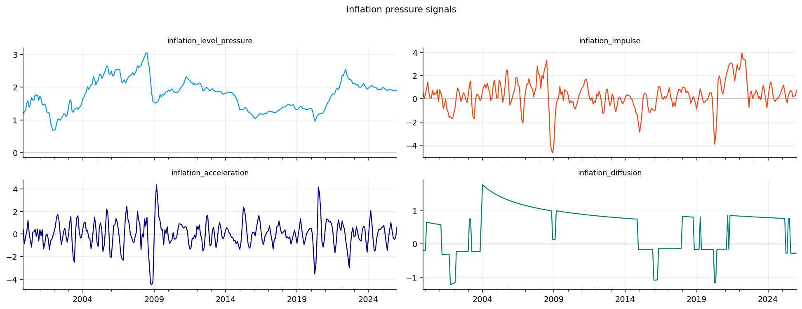
| inflation_level_pressure | inflation_impulse | inflation_acceleration | inflation_diffusion | |
|---|---|---|---|---|
| date | ||||
| 2025-09-30 | 1.913833 | 0.572598 | 0.283507 | -0.280186 |
| 2025-10-31 | 1.886823 | 0.156250 | -0.341571 | -0.279780 |
| 2025-11-30 | 1.894163 | 0.242142 | -0.480572 | -0.279375 |
| 2025-12-31 | 1.887851 | 0.271403 | -0.280847 | -0.278972 |
| 2026-01-31 | 1.903459 | 0.747146 | 0.588010 | -0.278571 |
policy_signals = pd.DataFrame(index=macro_factors.index)
policy_signals["policy_tightness"] = mean_z(macro_factors, policy_cols, min_obs=min_obs)
policy_signals["policy_shock"] = change_z(macro_factors, policy_cols, periods=3, min_obs=min_obs)
policy_signals["real_rate_squeeze"] = policy_signals["policy_tightness"] - inflation_signals["inflation_impulse"]
policy_gap = inflation_signals["inflation_level_pressure"] - policy_signals["policy_tightness"]
policy_signals["policy_catchup_risk"] = expanding_zscore(policy_gap.clip(lower=0.0), min_obs=min_obs)
plot_signal_group(policy_signals, "policy and rate pressure signals")
display(policy_signals.tail())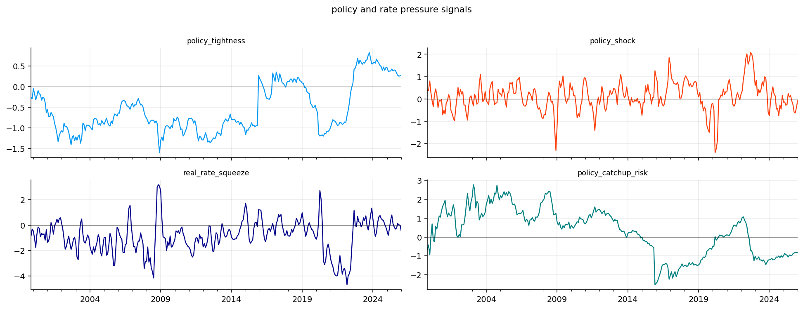
| policy_tightness | policy_shock | real_rate_squeeze | policy_catchup_risk | |
|---|---|---|---|---|
| date | ||||
| 2025-09-30 | 0.333683 | -0.252234 | -0.238916 | -0.889728 |
| 2025-10-31 | 0.277807 | -0.593257 | 0.121558 | -0.847508 |
| 2025-11-30 | 0.255488 | -0.629775 | 0.013346 | -0.804348 |
| 2025-12-31 | 0.263783 | -0.377883 | -0.007620 | -0.822879 |
| 2026-01-31 | 0.276304 | -0.084204 | -0.470842 | -0.816744 |
growth_signals = pd.DataFrame(index=macro_factors.index)
growth_signals["growth_momentum_stress"] = mean_z(macro_factors, growth_cols, min_obs=min_obs, sign=-1.0)
growth_signals["growth_acceleration_stress"] = change_z(macro_factors, growth_cols, periods=3, min_obs=min_obs, sign=-1.0)
growth_signals["growth_breadth_stress"] = stress_share(macro_factors, growth_cols, min_obs=min_obs, threshold=0.5, sign=-1.0)
growth_signals["survey_warning"] = mean_z(macro_factors, survey_cols, min_obs=min_obs, sign=-1.0)
plot_signal_group(growth_signals, "growth and recession signals")
display(growth_signals.tail())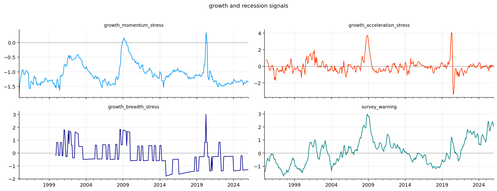
| growth_momentum_stress | growth_acceleration_stress | growth_breadth_stress | survey_warning | |
|---|---|---|---|---|
| date | ||||
| 2025-09-30 | -1.389831 | -0.101126 | -1.302400 | 2.152217 |
| 2025-10-31 | -1.301853 | 0.151222 | -1.297677 | 2.245408 |
| 2025-11-30 | -1.336166 | 0.067573 | -1.293005 | 2.414330 |
| 2025-12-31 | -1.324761 | 0.118781 | -1.288383 | 2.261299 |
| 2026-01-31 | -1.351111 | -0.100199 | -1.283811 | 1.998803 |
labor_signals = pd.DataFrame(index=macro_factors.index)
labor_parts = pd.concat([
mean_z(macro_factors, labor_unemployment_cols, min_obs=min_obs),
mean_z(macro_factors, labor_claims_cols, min_obs=min_obs),
mean_z(macro_factors, labor_jobs_cols, min_obs=min_obs, sign=-1.0),
], axis=1)
labor_signals["labor_cooling"] = labor_parts.mean(axis=1, skipna=True)
unemployment = macro_factors[labor_unemployment_cols].mean(axis=1, skipna=True)
sahm_gap = unemployment.rolling(3, min_periods=3).mean() - unemployment.rolling(12, min_periods=6).min()
labor_signals["sahm_pressure"] = expanding_zscore(sahm_gap, min_obs=min_obs)
plot_signal_group(labor_signals, "labor cooling signals")
display(labor_signals.tail())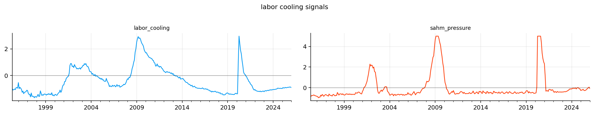
| labor_cooling | sahm_pressure | |
|---|---|---|
| date | ||
| 2025-09-30 | -0.896948 | -0.132507 |
| 2025-10-31 | -0.894983 | -0.093826 |
| 2025-11-30 | -0.873793 | 0.009136 |
| 2025-12-31 | -0.885415 | 0.047740 |
| 2026-01-31 | -0.918880 | -0.081183 |
housing_external_signals = pd.DataFrame(index=macro_factors.index)
housing_level = mean_z(macro_factors, housing_cols, min_obs=min_obs, sign=-1.0)
housing_impulse = change_z(macro_factors, housing_cols, periods=3, min_obs=min_obs, sign=-1.0)
housing_external_signals["housing_impulse_stress"] = pd.concat([housing_level, housing_impulse], axis=1).mean(axis=1, skipna=True)
housing_external_signals["housing_rate_squeeze"] = pd.concat([housing_external_signals["housing_impulse_stress"], policy_signals["policy_tightness"]], axis=1).mean(axis=1, skipna=True)
housing_external_signals["external_demand_stress"] = mean_z(macro_factors, external_demand_cols, min_obs=min_obs, sign=-1.0)
housing_external_signals["external_vulnerability"] = mean_z(macro_factors, external_balance_cols, min_obs=min_obs, sign=-1.0)
plot_signal_group(housing_external_signals[["housing_impulse_stress", "housing_rate_squeeze"]], "housing and domestic demand signals")
plot_signal_group(housing_external_signals[["external_demand_stress", "external_vulnerability"]], "external and trade signals")
display(housing_external_signals.tail())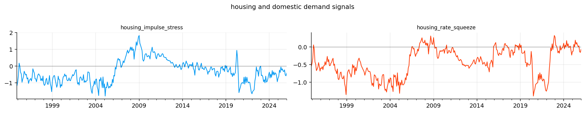
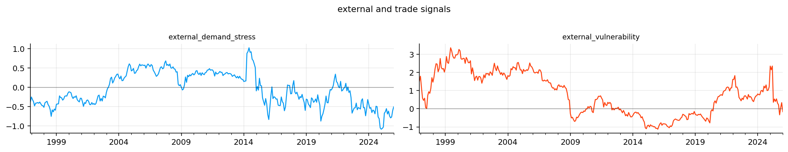
| housing_impulse_stress | housing_rate_squeeze | external_demand_stress | external_vulnerability | |
|---|---|---|---|---|
| date | ||||
| 2025-09-30 | -0.322739 | 0.005472 | -0.740800 | 0.211200 |
| 2025-10-31 | -0.220780 | 0.028514 | -0.791354 | -0.333764 |
| 2025-11-30 | -0.527817 | -0.136164 | -0.767349 | 0.048908 |
| 2025-12-31 | -0.573187 | -0.154702 | -0.601934 | 0.335830 |
| 2026-01-31 | -0.414740 | -0.069218 | -0.503834 | -0.163668 |
first_signals = pd.concat([inflation_signals, policy_signals, growth_signals, labor_signals, housing_external_signals], axis=1)
breadth_signals = pd.DataFrame(index=macro_factors.index)
breadth_signals["stress_breadth"] = expanding_zscore((first_signals > 0.5).where(first_signals.notna()).mean(axis=1, skipna=True), min_obs=min_obs)
breadth_signals["severe_stress_breadth"] = expanding_zscore((first_signals > 1.0).where(first_signals.notna()).mean(axis=1, skipna=True), min_obs=min_obs)
breadth_signals["stagflation_pressure"] = first_signals[["inflation_level_pressure", "policy_tightness", "growth_momentum_stress"]].mean(axis=1, skipna=True)
breadth_signals["goldilocks_support"] = -first_signals[["inflation_level_pressure", "policy_tightness", "growth_momentum_stress", "labor_cooling"]].mean(axis=1, skipna=True)
signals = pd.concat([first_signals, breadth_signals], axis=1)
plot_signal_group(breadth_signals, "macro breadth and conflict signals")
display(signals.tail())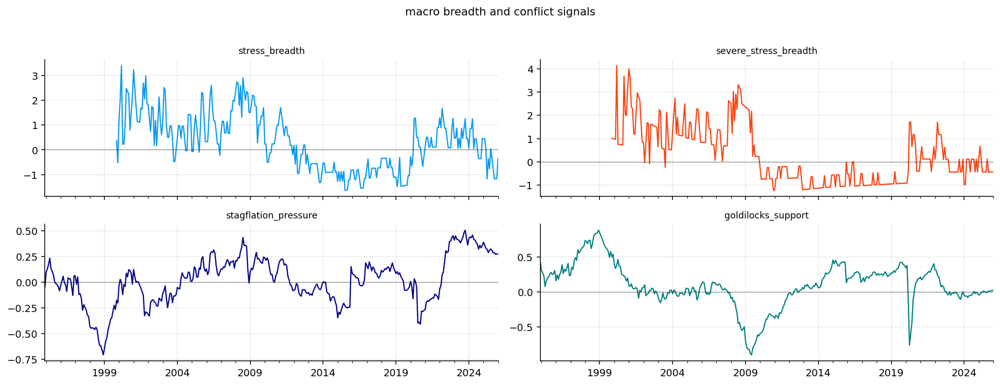
| inflation_level_pressure | inflation_impulse | inflation_acceleration | inflation_diffusion | policy_tightness | policy_shock | real_rate_squeeze | policy_catchup_risk | growth_momentum_stress | growth_acceleration_stress | growth_breadth_stress | survey_warning | labor_cooling | sahm_pressure | housing_impulse_stress | housing_rate_squeeze | external_demand_stress | external_vulnerability | stress_breadth | severe_stress_breadth | stagflation_pressure | goldilocks_support | |
|---|---|---|---|---|---|---|---|---|---|---|---|---|---|---|---|---|---|---|---|---|---|---|
| date | ||||||||||||||||||||||
| 2025-09-30 | 1.913833 | 0.572598 | 0.283507 | -0.280186 | 0.333683 | -0.252234 | -0.238916 | -0.889728 | -1.389831 | -0.101126 | -1.302400 | 2.152217 | -0.896948 | -0.132507 | -0.322739 | 0.005472 | -0.740800 | 0.211200 | -0.762965 | -0.440632 | 0.285895 | 0.009816 |
| 2025-10-31 | 1.886823 | 0.156250 | -0.341571 | -0.279780 | 0.277807 | -0.593257 | 0.121558 | -0.847508 | -1.301853 | 0.151222 | -1.297677 | 2.245408 | -0.894983 | -0.093826 | -0.220780 | 0.028514 | -0.791354 | -0.333764 | -1.167479 | -0.439924 | 0.287592 | 0.008051 |
| 2025-11-30 | 1.894163 | 0.242142 | -0.480572 | -0.279375 | 0.255488 | -0.629775 | 0.013346 | -0.804348 | -1.336166 | 0.067573 | -1.293005 | 2.414330 | -0.873793 | 0.009136 | -0.527817 | -0.136164 | -0.767349 | 0.048908 | -1.163777 | -0.439219 | 0.271162 | 0.015077 |
| 2025-12-31 | 1.887851 | 0.271403 | -0.280847 | -0.278972 | 0.263783 | -0.377883 | -0.007620 | -0.822879 | -1.324761 | 0.118781 | -1.288383 | 2.261299 | -0.885415 | 0.047740 | -0.573187 | -0.154702 | -0.601934 | 0.335830 | -1.160110 | -0.438518 | 0.275624 | 0.014636 |
| 2026-01-31 | 1.903459 | 0.747146 | 0.588010 | -0.278571 | 0.276304 | -0.084204 | -0.470842 | -0.816744 | -1.351111 | -0.100199 | -1.283811 | 1.998803 | -0.918880 | -0.081183 | -0.414740 | -0.069218 | -0.503834 | -0.163668 | -0.344277 | -0.437820 | 0.276217 | 0.022557 |
blocks = pd.DataFrame(index=signals.index)
blocks["inflation_pressure_block"] = signals[["inflation_level_pressure", "inflation_impulse", "inflation_acceleration", "inflation_diffusion"]].mean(axis=1, skipna=True)
blocks["policy_rate_pressure_block"] = signals[["policy_tightness", "policy_shock", "real_rate_squeeze", "policy_catchup_risk"]].mean(axis=1, skipna=True)
blocks["growth_recession_block"] = signals[["growth_momentum_stress", "growth_acceleration_stress", "growth_breadth_stress", "survey_warning"]].mean(axis=1, skipna=True)
blocks["labor_cooling_block"] = signals[["labor_cooling", "sahm_pressure"]].mean(axis=1, skipna=True)
blocks["housing_domestic_block"] = signals[["housing_impulse_stress", "housing_rate_squeeze"]].mean(axis=1, skipna=True)
blocks["external_trade_block"] = signals[["external_demand_stress", "external_vulnerability"]].mean(axis=1, skipna=True)
blocks["macro_breadth_conflict_block"] = signals[["stress_breadth", "severe_stress_breadth", "stagflation_pressure"]].join(-signals["goldilocks_support"].rename("negative_goldilocks_support")).mean(axis=1, skipna=True)
macro_full = pd.concat([signals, blocks], axis=1)
macro_full["n_raw_series_used"] = macro_factors.notna().sum(axis=1)
macro_full["n_signals_available"] = signals.notna().sum(axis=1)
macro_full["n_blocks_available"] = blocks.notna().sum(axis=1)
macro_full["coverage_score"] = macro_full["n_blocks_available"] / blocks.shape[1]
macro_full = macro_full.loc[(macro_full["n_blocks_available"] >= 6) & (macro_full["n_raw_series_used"] >= 10)]
block_cols = blocks.columns.tolist()
meta_cols = ["n_raw_series_used", "n_signals_available", "n_blocks_available", "coverage_score"]
signal_cols = signals.columns.tolist()
macro_start_candidates = macro_full.index[macro_full[block_cols].notna().sum(axis=1) >= 6]
macro_start = max(macro_start_candidates[0], minimum_visible_date)
macro = macro_full.loc[macro_start:].copy()
availability_rows = []
for col in macro.columns:
s = macro[col]
availability_rows.append({"column": col, "first_date": s.first_valid_index(), "last_date": s.last_valid_index(), "observations": int(s.notna().sum()), "available_share": float(s.notna().mean())})
availability = pd.DataFrame(availability_rows).set_index("column")
display(pd.DataFrame({"warmup_start": [macro_full.index.min()], "analysis_start": [macro.index.min()], "end": [macro.index.max()], "rows": [len(macro)]}))
display(availability.loc[signal_cols + block_cols].round(3))| warmup_start | analysis_start | end | rows | |
|---|---|---|---|---|
| 0 | 1994-12-31 | 1994-12-31 | 2026-01-31 | 374 |
| first_date | last_date | observations | available_share | |
|---|---|---|---|---|
| column | ||||
| inflation_level_pressure | 1994-12-31 | 2026-01-31 | 374 | 1.000 |
| inflation_impulse | 1995-03-31 | 2026-01-31 | 371 | 0.992 |
| inflation_acceleration | 1995-06-30 | 2026-01-31 | 368 | 0.984 |
| inflation_diffusion | 1999-11-30 | 2026-01-31 | 315 | 0.842 |
| policy_tightness | 1994-12-31 | 2026-01-31 | 374 | 1.000 |
| policy_shock | 1995-03-31 | 2026-01-31 | 371 | 0.992 |
| real_rate_squeeze | 1995-03-31 | 2026-01-31 | 371 | 0.992 |
| policy_catchup_risk | 1999-11-30 | 2026-01-31 | 315 | 0.842 |
| growth_momentum_stress | 1994-12-31 | 2026-01-31 | 374 | 1.000 |
| growth_acceleration_stress | 1995-03-31 | 2026-01-31 | 371 | 0.992 |
| growth_breadth_stress | 1999-11-30 | 2026-01-31 | 315 | 0.842 |
| survey_warning | 1994-12-31 | 2026-01-31 | 374 | 1.000 |
| labor_cooling | 1994-12-31 | 2026-01-31 | 374 | 1.000 |
| sahm_pressure | 1995-05-31 | 2026-01-31 | 369 | 0.987 |
| housing_impulse_stress | 1994-12-31 | 2026-01-31 | 374 | 1.000 |
| housing_rate_squeeze | 1994-12-31 | 2026-01-31 | 374 | 1.000 |
| external_demand_stress | 1994-12-31 | 2026-01-31 | 374 | 1.000 |
| external_vulnerability | 1996-12-31 | 2026-01-31 | 350 | 0.936 |
| stress_breadth | 1999-11-30 | 2026-01-31 | 315 | 0.842 |
| severe_stress_breadth | 1999-11-30 | 2026-01-31 | 315 | 0.842 |
| stagflation_pressure | 1994-12-31 | 2026-01-31 | 374 | 1.000 |
| goldilocks_support | 1994-12-31 | 2026-01-31 | 374 | 1.000 |
| inflation_pressure_block | 1994-12-31 | 2026-01-31 | 374 | 1.000 |
| policy_rate_pressure_block | 1994-12-31 | 2026-01-31 | 374 | 1.000 |
| growth_recession_block | 1994-12-31 | 2026-01-31 | 374 | 1.000 |
| labor_cooling_block | 1994-12-31 | 2026-01-31 | 374 | 1.000 |
| housing_domestic_block | 1994-12-31 | 2026-01-31 | 374 | 1.000 |
| external_trade_block | 1994-12-31 | 2026-01-31 | 374 | 1.000 |
| macro_breadth_conflict_block | 1994-12-31 | 2026-01-31 | 374 | 1.000 |
us_sector_assets = ["xlb", "xle", "xlf", "xli", "xlk", "xlp", "xlu", "xlv", "xly"]
optional_sector_assets = ["vnq", "iyr"]
required_defensive_assets = ["cash"]
optional_defensive_assets = ["shy", "ief", "tlt", "gld", "dbc"]
defensive_assets = required_defensive_assets + optional_defensive_assets
signal_assets = ["spy", "qqq", "iwm", "hyg", "lqd", "uup"]
etf_defensive_assets = optional_defensive_assets[:]
all_tickers = sorted(set(us_sector_assets + optional_sector_assets + etf_defensive_assets + signal_assets))
etf_data = load_yfinance_panel(etf_path, fields=("close", "volume"), tickers=all_tickers, lowercase=True)
close = etf_data["close"].ffill(limit=3)
volume = etf_data["volume"].ffill(limit=3)
daily_returns_raw = prices_to_returns(close, kind="simple")
daily_returns = daily_returns_raw.fillna(0.0).loc[daily_returns_raw.index >= macro_start]
month_key = close.index.to_period("M")
monthly_close = close.groupby(month_key).last()
monthly_close.index = monthly_close.index.to_timestamp("M")
monthly_close = monthly_close.loc[monthly_close.index >= macro_start]
returns_raw = prices_to_returns(monthly_close, kind="simple")
returns_raw["cash"] = rf_monthly
returns = returns_raw.copy()
rebalance_dates = make_rebalance_dates(daily_returns.index, freq="ME")
rebalance_months = pd.to_datetime(rebalance_dates).to_period("M").to_timestamp("M")
rebalance_months = returns.index.intersection(rebalance_months)
coverage_rows = []
for ticker in close.columns:
prices = close[ticker].dropna()
coverage_rows.append({"ticker": ticker, "first_price": prices.index.min(), "last_price": prices.index.max(), "price_observations": int(len(prices))})
etf_coverage = pd.DataFrame(coverage_rows).set_index("ticker")
display(etf_coverage.loc[[x for x in all_tickers if x in etf_coverage.index]])| first_price | last_price | price_observations | |
|---|---|---|---|
| ticker | |||
| dbc | 2006-02-06 | 2026-05-20 | 5197 |
| gld | 2004-11-18 | 2026-05-20 | 5510 |
| hyg | 2007-04-11 | 2026-05-20 | 4895 |
| ief | 2002-07-30 | 2026-05-20 | 6103 |
| iwm | 2000-05-26 | 2026-05-20 | 6661 |
| iyr | 2000-06-19 | 2026-05-20 | 6645 |
| lqd | 2002-07-30 | 2026-05-20 | 6103 |
| qqq | 1999-03-10 | 2026-05-20 | 6973 |
| shy | 2002-07-30 | 2026-05-20 | 6103 |
| spy | 1999-01-04 | 2026-05-20 | 7018 |
| tlt | 2002-07-30 | 2026-05-20 | 6103 |
| uup | 2007-03-01 | 2026-05-20 | 4923 |
| vnq | 2004-09-29 | 2026-05-20 | 5546 |
| xlb | 1999-01-04 | 2026-05-20 | 7018 |
| xle | 1999-01-04 | 2026-05-20 | 7018 |
| xlf | 1999-01-04 | 2026-05-20 | 7018 |
| xli | 1999-01-04 | 2026-05-20 | 7018 |
| xlk | 1999-01-04 | 2026-05-20 | 7018 |
| xlp | 1999-01-04 | 2026-05-20 | 7018 |
| xlu | 1999-01-04 | 2026-05-20 | 7018 |
| xlv | 1999-01-04 | 2026-05-20 | 7018 |
| xly | 1999-01-04 | 2026-05-20 | 7018 |
nfci_raw = pd.read_csv(nfci_path)
nfci_raw.columns = [str(col).lower() for col in nfci_raw.columns]
nfci_raw["date"] = pd.to_datetime(nfci_raw["friday_of_week"], errors="coerce")
nfci = nfci_raw.dropna(subset=["date"]).set_index("date").sort_index().drop(columns=["friday_of_week"])
nfci = nfci.apply(pd.to_numeric, errors="coerce")
nfci_month = nfci.groupby(nfci.index.to_period("M")).last()
nfci_month.index = nfci_month.index.to_timestamp("M")
nfci_month = nfci_month.loc[nfci_month.index >= macro_start]block_corr = macro[block_cols].corr()
fig, ax = plt.subplots(figsize=(8, 6))
im = ax.imshow(block_corr, cmap="coolwarm", vmin=-1, vmax=1)
ax.set_xticks(range(len(block_corr.columns)))
ax.set_xticklabels(block_corr.columns, rotation=45, ha="right", fontsize=8)
ax.set_yticks(range(len(block_corr.index)))
ax.set_yticklabels(block_corr.index, fontsize=8)
for i in range(block_corr.shape[0]):
for j in range(block_corr.shape[1]):
value = block_corr.iloc[i, j]
if np.isfinite(value):
ax.text(j, i, f"{value:.2f}", ha="center", va="center", fontsize=7)
ax.set_title("condition block correlation")
fig.colorbar(im, ax=ax, fraction=0.046, pad=0.04)
plt.tight_layout()
plt.show()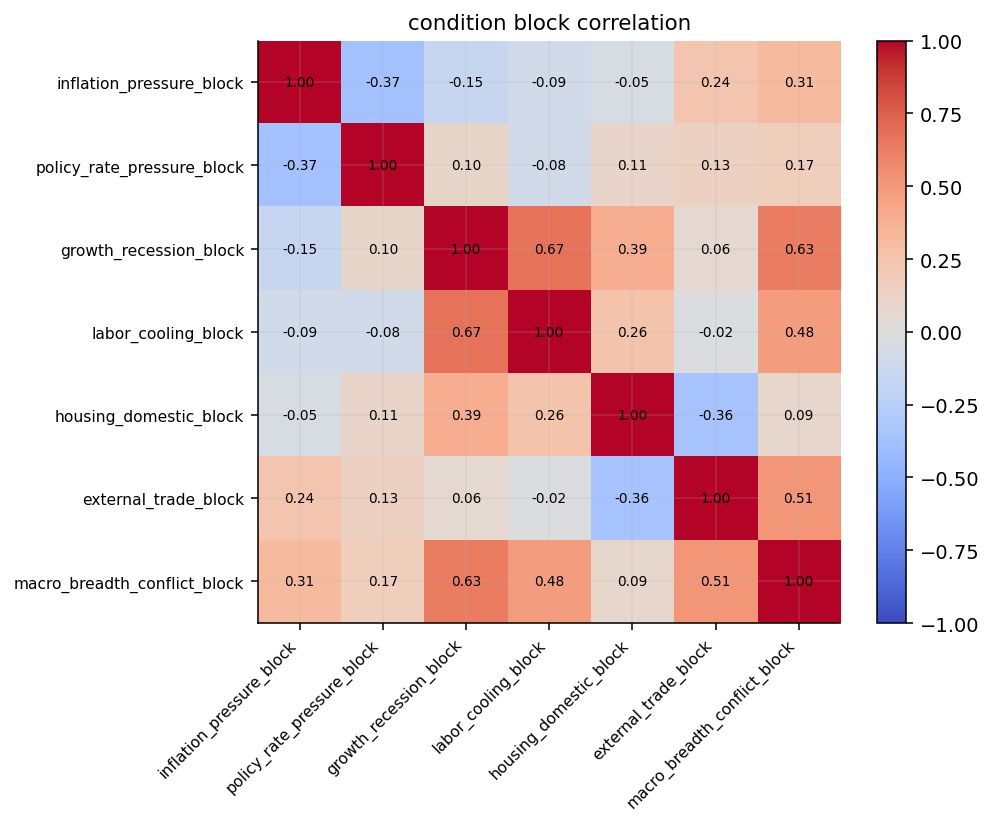
display(macro[block_cols].tail(12).round(2))
display(macro["macro_breadth_conflict_block"].dropna().sort_values(ascending=False).head(5).to_frame("macro_breadth_conflict_block").round(2))| inflation_pressure_block | policy_rate_pressure_block | growth_recession_block | labor_cooling_block | housing_domestic_block | external_trade_block | macro_breadth_conflict_block | |
|---|---|---|---|---|---|---|---|
| date | |||||||
| 2025-02-28 | 1.17 | -0.36 | 0.02 | -0.58 | -0.37 | 0.54 | 0.38 |
| 2025-03-31 | 0.85 | -0.27 | 0.08 | -0.59 | -0.08 | 0.66 | 0.12 |
| 2025-04-30 | 0.22 | -0.12 | -0.10 | -0.55 | -0.19 | -0.16 | -0.32 |
| 2025-05-31 | -0.05 | 0.10 | -0.23 | -0.58 | 0.07 | -0.05 | -0.13 |
| 2025-06-30 | 0.65 | -0.09 | -0.21 | -0.61 | -0.08 | -0.07 | -0.22 |
| 2025-07-31 | 0.92 | -0.13 | -0.30 | -0.59 | -0.02 | -0.07 | -0.01 |
| 2025-08-31 | 0.84 | -0.25 | -0.14 | -0.56 | -0.12 | -0.15 | 0.02 |
| 2025-09-30 | 0.62 | -0.26 | -0.16 | -0.51 | -0.16 | -0.26 | -0.23 |
| 2025-10-31 | 0.36 | -0.26 | -0.05 | -0.49 | -0.10 | -0.56 | -0.33 |
| 2025-11-30 | 0.34 | -0.29 | -0.04 | -0.43 | -0.33 | -0.36 | -0.34 |
| 2025-12-31 | 0.40 | -0.24 | -0.06 | -0.42 | -0.36 | -0.13 | -0.33 |
| 2026-01-31 | 0.74 | -0.27 | -0.18 | -0.50 | -0.24 | -0.33 | -0.13 |
| macro_breadth_conflict_block | |
|---|---|
| date | |
| 2001-01-31 | 1.82 |
| 2000-03-31 | 1.78 |
| 2008-07-31 | 1.78 |
| 2008-08-31 | 1.61 |
| 2008-03-31 | 1.52 |
selected_dates = ["2008-10", "2020-03", "2022-09", str(macro.index.max().date())[:7]]
contribution_rows = []
for text in selected_dates:
date = pd.to_datetime(text).to_period("M").to_timestamp("M")
loc = macro.index.searchsorted(date, side="right") - 1
date = macro.index[loc]
for block, value in macro.loc[date, block_cols].items():
contribution_rows.append({"date": date, "block": block, "value": value})
block_contribution_table = pd.DataFrame(contribution_rows).pivot(index="date", columns="block", values="value")
display(block_contribution_table.round(2))| block | external_trade_block | growth_recession_block | housing_domestic_block | inflation_pressure_block | labor_cooling_block | macro_breadth_conflict_block | policy_rate_pressure_block |
|---|---|---|---|---|---|---|---|
| date | |||||||
| 2008-10-31 | 0.48 | 1.66 | 0.71 | -1.26 | 2.05 | 1.44 | 0.72 |
| 2020-03-31 | -0.83 | 0.87 | -0.13 | -0.58 | 0.52 | -0.17 | -0.77 |
| 2022-09-30 | -0.12 | -0.01 | -0.08 | -0.17 | -0.82 | 0.27 | 0.74 |
| 2026-01-31 | -0.33 | -0.18 | -0.24 | 0.74 | -0.50 | -0.13 | -0.27 |
def zscore(series, min_obs=60):
series = pd.Series(series, dtype=float).replace([np.inf, -np.inf], np.nan)
mean = series.expanding(min_periods=min_obs).mean()
std = series.expanding(min_periods=min_obs).std(ddof=1).replace(0.0, np.nan)
return ((series - mean) / std).clip(-5, 5)
def rolling_percentile(series, min_obs=60):
series = pd.Series(series, dtype=float)
values = []
for i in range(len(series)):
sample = series.iloc[:i + 1].dropna()
if len(sample) < min_obs or not np.isfinite(series.iloc[i]):
values.append(np.nan)
else:
values.append(float((sample <= series.iloc[i]).mean()))
return pd.Series(values, index=series.index)econ_weights = pd.Series({"inflation_pressure_block": 0.18, "policy_rate_pressure_block": 0.18, "growth_recession_block": 0.18, "labor_cooling_block": 0.12, "housing_domestic_block": 0.10, "external_trade_block": 0.10, "macro_breadth_conflict_block": 0.14})
econ_data = macro_full[econ_weights.index].astype(float)
econ_weighted_sum = econ_data.mul(econ_weights, axis=1).sum(axis=1, skipna=True)
econ_available_weight = econ_data.notna().mul(econ_weights, axis=1).sum(axis=1).replace(0.0, np.nan)
fci_econ_full = zscore(econ_weighted_sum / econ_available_weight, 12).rename("fci_econ")
fci_econ = fci_econ_full.reindex(macro.index)def pca_index(blocks, min_obs=60, min_cols=6):
out = pd.Series(np.nan, index=blocks.index, name="fci_pca")
average_stress = blocks.mean(axis=1, skipna=True)
for date in blocks.index:
hist = blocks.loc[:date]
good_cols = [col for col in blocks.columns if hist[col].notna().sum() >= min_obs]
row = blocks.loc[date, good_cols]
good_cols = [col for col in good_cols if np.isfinite(row.get(col, np.nan))]
if len(good_cols) < min_cols:
continue
sample = hist[good_cols].dropna(how="any")
if len(sample) < min_obs:
continue
scaler = StandardScaler()
train = scaler.fit_transform(sample)
model = PCA(n_components=1)
model.fit(train)
current = scaler.transform(blocks.loc[[date], good_cols])
score = float(model.transform(current)[0, 0])
hist_score = pd.Series(model.transform(train)[:, 0], index=sample.index)
align = pd.concat([hist_score, average_stress.reindex(sample.index)], axis=1).dropna()
if len(align) > 12 and align.iloc[:, 0].corr(align.iloc[:, 1]) < 0:
score = -score
out.loc[date] = score
return zscore(out, 12).rename("fci_pca")
fci_pca_full = pca_index(macro_full[block_cols], 36, 6)
fci_pca = fci_pca_full.reindex(macro.index)spy_return = returns_raw["spy"]
future_1m_return = spy_return.shift(-1)
future_3m_return = (1.0 + spy_return.shift(-1)).rolling(3).apply(np.prod, raw=True).shift(-2) - 1.0
future_3m_volatility = spy_return.shift(-1).rolling(3).std(ddof=1).shift(-2) * np.sqrt(12.0)
future_drawdown_values = []
for i in range(len(spy_return)):
sample = spy_return.iloc[i + 1:i + 4].dropna()
if len(sample) < 3:
future_drawdown_values.append(np.nan)
else:
nav = (1.0 + sample).cumprod()
future_drawdown_values.append(float((nav / nav.cummax() - 1.0).min()))
future_3m_max_drawdown = pd.Series(future_drawdown_values, index=spy_return.index, name="future_3m_max_drawdown")
target_table = pd.concat([future_1m_return.rename("future_1m_return"), future_3m_return.rename("future_3m_return"), future_3m_volatility.rename("future_3m_volatility"), future_3m_max_drawdown], axis=1)
target_table["future_stress"] = zscore(-target_table["future_3m_return"], 36) + zscore(target_table["future_3m_volatility"], 36) + zscore(-target_table["future_3m_max_drawdown"], 36)
target_table = target_table.reindex(macro_full.index.union(target_table.index)).sort_index()def pls_index(blocks, target, min_obs=60, min_cols=6, embargo_months=3):
out = pd.Series(np.nan, index=blocks.index, name="fci_pls")
target = pd.Series(target, dtype=float)
for date in blocks.index:
cutoff = pd.Timestamp(date) - pd.offsets.MonthEnd(embargo_months)
hist_x = blocks.loc[blocks.index < cutoff]
hist_y = target.reindex(hist_x.index)
good_cols = [col for col in blocks.columns if hist_x[col].notna().sum() >= min_obs]
row = blocks.loc[date, good_cols]
good_cols = [col for col in good_cols if np.isfinite(row.get(col, np.nan))]
if len(good_cols) < min_cols:
continue
train = pd.concat([hist_x[good_cols], hist_y.rename("target")], axis=1).dropna()
if len(train) < min_obs:
continue
scaler = StandardScaler()
train_x = scaler.fit_transform(train[good_cols])
components = min(2, len(good_cols), len(train) - 1)
model = PLSRegression(n_components=components)
model.fit(train_x, train["target"].to_numpy(dtype=float))
current = scaler.transform(blocks.loc[[date], good_cols])
prediction = np.asarray(model.predict(current), dtype=float).reshape(-1)
out.loc[date] = float(prediction[0])
return zscore(out, 36).rename("fci_pls")
fci_pls_full = pls_index(macro_full[block_cols], target_table["future_stress"], 36, 6, 3)
fci_pls = fci_pls_full.reindex(macro.index)def prob_index(features, target, min_obs=60, embargo_months=3):
x = features.apply(pd.to_numeric, errors="coerce").replace([np.inf, -np.inf], np.nan)
y = pd.Series(target, dtype=float).reindex(x.index)
threshold = y.expanding(min_periods=min_obs).quantile(0.75).shift(1)
label = (y > threshold).where(threshold.notna())
out = pd.Series(np.nan, index=x.index, name="fci_prob")
for date in x.index:
current = x.loc[date].dropna()
cutoff = pd.Timestamp(date) - pd.offsets.MonthEnd(embargo_months)
history = x.loc[x.index < cutoff]
cols = [col for col in current.index if history[col].notna().sum() >= min_obs]
if len(cols) < 4:
continue
train = pd.concat([history[cols], label.loc[history.index].rename("label")], axis=1).dropna()
if len(train) < min_obs or train["label"].nunique() < 2:
continue
scaler = StandardScaler()
train_x = scaler.fit_transform(train[cols])
model = LogisticRegression(C=1.0, max_iter=1000, solver="lbfgs")
model.fit(train_x, train["label"].astype(int))
current_x = scaler.transform(x.loc[[date], cols])
out.loc[date] = float(model.predict_proba(current_x)[0, 1])
return out
prob_features = pd.concat([macro_full[block_cols], fci_econ_full, fci_pca_full, fci_pls_full], axis=1)
fci_prob_full = prob_index(prob_features, target_table["future_stress"], 36, 3)
fci_prob_z_full = zscore(fci_prob_full, 12).rename("fci_prob")
fci_prob_z = fci_prob_z_full.reindex(macro.index)fci_blend_full = zscore(0.50 * fci_pls_full + 0.30 * fci_pca_full + 0.20 * fci_econ_full, 12).rename("fci_blend")
fci_blend = fci_blend_full.reindex(macro.index)
fci_models = pd.concat([fci_econ, fci_pca, fci_pls, fci_prob_z, fci_blend], axis=1).reindex(macro.index)
fci_availability = pd.DataFrame({
"first_date": fci_models.apply(pd.Series.first_valid_index),
"last_date": fci_models.apply(pd.Series.last_valid_index),
"observations": fci_models.notna().sum(),
})
fci_plot_start = fci_models.dropna(thresh=2).index.min()
fci_common_start = fci_models.dropna(how="any").index.min()
fci_common = fci_models.loc[fci_common_start:].dropna(how="any") if pd.notna(fci_common_start) else pd.DataFrame()
display(fci_availability)
fig, axes = plt.subplots(1, 2, figsize=(16, 4.5))
fci_models.loc[fci_plot_start:].plot(ax=axes[0], lw=1.1, color=colors[:len(fci_models.columns)])
axes[0].axhline(0.0, color="black", lw=0.8, alpha=0.5)
if pd.notna(fci_common_start):
axes[0].axvline(fci_common_start, color="black", lw=0.8, ls="--", alpha=0.6)
axes[0].set_title("fci models from available analysis window")
axes[0].grid(True, alpha=0.25)
fci_corr = fci_common.corr() if len(fci_common) else fci_models.corr()
im = axes[1].imshow(fci_corr, cmap="coolwarm", vmin=-1, vmax=1)
axes[1].set_xticks(range(len(fci_corr.columns)))
axes[1].set_xticklabels(fci_corr.columns, rotation=45, ha="right")
axes[1].set_yticks(range(len(fci_corr.columns)))
axes[1].set_yticklabels(fci_corr.columns)
for i in range(fci_corr.shape[0]):
for j in range(fci_corr.shape[1]):
value = fci_corr.iloc[i, j]
if np.isfinite(value):
axes[1].text(j, i, f"{value:.2f}", ha="center", va="center", fontsize=8)
axes[1].set_title("fci correlation on common model sample")
fig.colorbar(im, ax=axes[1], fraction=0.046, pad=0.04)
plt.tight_layout()
plt.show()| first_date | last_date | observations | |
|---|---|---|---|
| fci_econ | 1995-11-30 | 2026-01-31 | 363 |
| fci_pca | 1998-10-31 | 2026-01-31 | 328 |
| fci_pls | 2008-03-31 | 2026-01-31 | 215 |
| fci_prob | 2009-03-31 | 2026-01-31 | 203 |
| fci_blend | 2009-02-28 | 2026-01-31 | 204 |
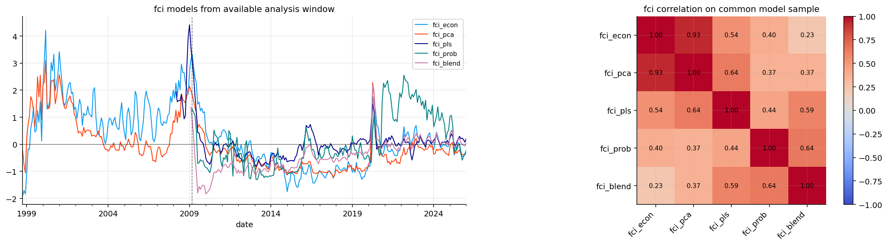
latest_rows = []
for col in fci_models.columns:
series = fci_models[col].dropna()
if series.empty:
continue
pct = rolling_percentile(fci_models[col], 60)
change = fci_models[col].diff(3)
date = series.index.max()
latest_pct = float(pct.loc[date]) if np.isfinite(pct.loc[date]) else np.nan
interpretation = "tight" if latest_pct >= 0.8 else "easy" if latest_pct <= 0.2 else "neutral"
latest_rows.append({"model": col, "date": date, "value": float(series.loc[date]), "percentile": latest_pct, "change_3m": change.loc[date], "interpretation": interpretation})
latest_fci_table = pd.DataFrame(latest_rows).set_index("model")
display(latest_fci_table.round(3))
fig, axes = plt.subplots(1, 3, figsize=(17, 4), sharey=True)
for ax, start, end, title in zip(axes, ["2008-01", "2020-01", "2022-01"], ["2009-12", "2020-12", "2022-12"], ["2008", "2020", "2022"]):
fci_models.loc[start:end].plot(ax=ax, lw=1.1)
ax.axhline(0.0, color="black", lw=0.8)
ax.set_title(title)
ax.grid(True, alpha=0.3)
plt.tight_layout()
plt.show()| date | value | percentile | change_3m | interpretation | |
|---|---|---|---|---|---|
| model | |||||
| fci_econ | 2026-01-31 | -0.208 | 0.386 | 0.242 | neutral |
| fci_pca | 2026-01-31 | -0.349 | 0.439 | 0.019 | neutral |
| fci_pls | 2026-01-31 | 0.218 | 0.814 | -0.013 | tight |
| fci_prob | 2026-01-31 | -0.297 | 0.483 | 0.289 | neutral |
| fci_blend | 2026-01-31 | 0.070 | 0.809 | 0.065 | tight |
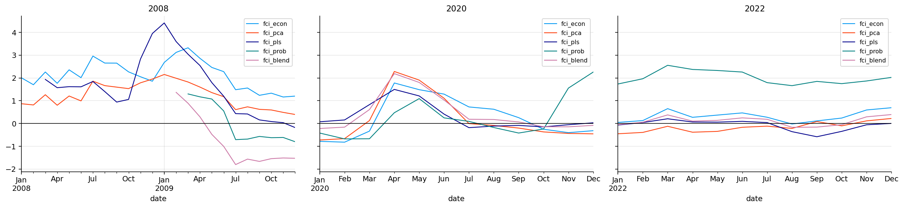
nfci_validation = pd.concat([nfci_month["nfci"], fci_models], axis=1).loc[macro_start:].dropna(subset=["nfci"])crisis_windows = {"financial_crisis": ("2008-09", "2009-03"), "covid_crash": ("2020-02", "2020-04"), "inflation_rate_shock": ("2022-01", "2022-10")}def quintile_report(fci, target):
data = pd.concat([fci.rename("fci"), target], axis=1).dropna(subset=["fci", "future_stress"])
if len(data) < 30:
return pd.DataFrame()
ranks = data["fci"].rank(method="first")
data["fci_quintile"] = pd.qcut(ranks, 5, labels=["q1", "q2", "q3", "q4", "q5"])
report = data.groupby("fci_quintile", observed=False)[["future_1m_return", "future_3m_return", "future_3m_volatility", "future_3m_max_drawdown", "future_stress"]].mean()
report["observations"] = data.groupby("fci_quintile", observed=False).size()
return report
quintile_reports = {name: quintile_report(fci_models[name], target_table) for name in fci_models.columns}
for name, report in quintile_reports.items():
print(name)
display(report.round(4))fci_econ| future_1m_return | future_3m_return | future_3m_volatility | future_3m_max_drawdown | future_stress | observations | |
|---|---|---|---|---|---|---|
| fci_quintile | ||||||
| q1 | 0.0141 | 0.0257 | 0.0975 | -0.0216 | -0.5985 | 58 |
| q2 | 0.0119 | 0.0426 | 0.1248 | -0.0167 | -0.6338 | 58 |
| q3 | 0.0116 | 0.0369 | 0.1319 | -0.0247 | -0.4533 | 57 |
| q4 | 0.0055 | 0.0201 | 0.1171 | -0.0228 | -0.6806 | 58 |
| q5 | 0.0004 | 0.0065 | 0.1443 | -0.0399 | 0.1867 | 58 |
fci_pca| future_1m_return | future_3m_return | future_3m_volatility | future_3m_max_drawdown | future_stress | observations | |
|---|---|---|---|---|---|---|
| fci_quintile | ||||||
| q1 | 0.0128 | 0.0240 | 0.0974 | -0.0220 | -0.5626 | 58 |
| q2 | 0.0074 | 0.0344 | 0.1203 | -0.0182 | -0.5884 | 58 |
| q3 | 0.0147 | 0.0330 | 0.1118 | -0.0228 | -0.6833 | 57 |
| q4 | 0.0067 | 0.0310 | 0.1287 | -0.0215 | -0.5822 | 58 |
| q5 | 0.0021 | 0.0092 | 0.1570 | -0.0411 | 0.2331 | 58 |
fci_pls| future_1m_return | future_3m_return | future_3m_volatility | future_3m_max_drawdown | future_stress | observations | |
|---|---|---|---|---|---|---|
| fci_quintile | ||||||
| q1 | 0.0114 | 0.0301 | 0.1194 | -0.0228 | -0.5173 | 43 |
| q2 | 0.0102 | 0.0305 | 0.1221 | -0.0213 | -0.4201 | 43 |
| q3 | 0.0083 | 0.0248 | 0.1310 | -0.0294 | -0.0475 | 43 |
| q4 | 0.0156 | 0.0440 | 0.1417 | -0.0221 | -0.2875 | 43 |
| q5 | 0.0057 | 0.0227 | 0.1472 | -0.0352 | 0.3002 | 43 |
fci_prob| future_1m_return | future_3m_return | future_3m_volatility | future_3m_max_drawdown | future_stress | observations | |
|---|---|---|---|---|---|---|
| fci_quintile | ||||||
| q1 | 0.0124 | 0.0305 | 0.1192 | -0.0209 | -0.5660 | 41 |
| q2 | 0.0104 | 0.0379 | 0.1112 | -0.0143 | -0.8600 | 40 |
| q3 | 0.0103 | 0.0314 | 0.1242 | -0.0256 | -0.2704 | 41 |
| q4 | 0.0184 | 0.0489 | 0.1269 | -0.0199 | -0.6446 | 40 |
| q5 | 0.0138 | 0.0400 | 0.1497 | -0.0284 | 0.0154 | 41 |
fci_blend| future_1m_return | future_3m_return | future_3m_volatility | future_3m_max_drawdown | future_stress | observations | |
|---|---|---|---|---|---|---|
| fci_quintile | ||||||
| q1 | 0.0162 | 0.0457 | 0.1289 | -0.0199 | -0.7391 | 41 |
| q2 | 0.0096 | 0.0248 | 0.1085 | -0.0215 | -0.5906 | 41 |
| q3 | 0.0087 | 0.0282 | 0.1035 | -0.0206 | -0.5562 | 40 |
| q4 | 0.0151 | 0.0308 | 0.1334 | -0.0260 | -0.0889 | 41 |
| q5 | 0.0170 | 0.0642 | 0.1553 | -0.0206 | -0.4411 | 41 |
def score_fci_models(models, target):
rows = []
for name in models.columns:
report = quintile_report(models[name], target)
pair = pd.concat([models[name].rename("fci"), target["future_stress"]], axis=1).dropna()
rank_ic = pair["fci"].rank().corr(pair["future_stress"].rank()) if len(pair) >= 20 else np.nan
if report.empty:
rows.append({"model": name, "observations": int(models[name].notna().sum()), "first_valid_date": models[name].first_valid_index(), "last_valid_date": models[name].last_valid_index(), "future_stress_rank_ic": rank_ic})
continue
y = report["future_stress"].dropna()
monotonicity = pd.Series(range(1, len(y) + 1), index=y.index).corr(y.rank()) if len(y) >= 3 else np.nan
rows.append({"model": name, "observations": int(models[name].notna().sum()), "first_valid_date": models[name].first_valid_index(), "last_valid_date": models[name].last_valid_index(), "future_stress_rank_ic": rank_ic, "drawdown_spread": report.loc["q1", "future_3m_max_drawdown"] - report.loc["q5", "future_3m_max_drawdown"], "monotonicity_score": monotonicity, "volatility_spread": report.loc["q5", "future_3m_volatility"] - report.loc["q1", "future_3m_volatility"], "stability_score": 1.0 / (1.0 + models[name].diff().std())})
scores = pd.DataFrame(rows).set_index("model") if rows else pd.DataFrame()
for col in ["future_stress_rank_ic", "drawdown_spread", "monotonicity_score", "volatility_spread", "stability_score"]:
if col in scores:
scores[col + "_rank"] = scores[col].rank(pct=True)
if len(scores):
scores["final_score"] = 0.30 * scores["future_stress_rank_ic_rank"] + 0.25 * scores["drawdown_spread_rank"] + 0.20 * scores["monotonicity_score_rank"] + 0.15 * scores["volatility_spread_rank"] + 0.10 * scores["stability_score_rank"]
scores = scores.sort_values("final_score", ascending=False)
return scores
full_sample_scoreboard = score_fci_models(fci_models, target_table)
full_sample_scoreboard["long_history_eligible"] = (full_sample_scoreboard["observations"] >= 180) & (full_sample_scoreboard["first_valid_date"] <= pd.Timestamp("2000-12-31"))
common_model_index = pd.concat([fci_models, target_table["future_stress"]], axis=1).dropna().index
common_model_scoreboard = score_fci_models(fci_models.reindex(common_model_index), target_table.reindex(common_model_index))
model_split_date = common_model_index[int(len(common_model_index) * 0.65)] if len(common_model_index) else pd.NaT
train_model_index = common_model_index[common_model_index < model_split_date]
test_model_index = common_model_index[common_model_index >= model_split_date]
train_model_scoreboard = score_fci_models(fci_models.reindex(train_model_index), target_table.reindex(train_model_index))
test_model_scoreboard = score_fci_models(fci_models.reindex(test_model_index), target_table.reindex(test_model_index))
display(full_sample_scoreboard.round(4))
display(common_model_scoreboard.round(4))
display(pd.DataFrame({"model_split_date": [model_split_date], "train_months": [len(train_model_index)], "test_months": [len(test_model_index)]}))
display(test_model_scoreboard.round(4))
fig, axes = plt.subplots(2, 2, figsize=(15, 7))
full_sample_scoreboard["final_score"].sort_values().plot(kind="barh", ax=axes[0, 0], color=colors[0])
common_model_scoreboard["final_score"].sort_values().plot(kind="barh", ax=axes[0, 1], color=colors[1])
train_model_scoreboard["final_score"].sort_values().plot(kind="barh", ax=axes[1, 0], color=colors[2])
test_model_scoreboard["final_score"].sort_values().plot(kind="barh", ax=axes[1, 1], color=colors[3])
for ax, title in zip(axes.ravel(), ["full available sample score", "common model sample score", "train sample score", "test sample score"]):
ax.set_title(title)
ax.grid(True, axis="x", alpha=0.3)
plt.tight_layout()
plt.show()| observations | first_valid_date | last_valid_date | future_stress_rank_ic | drawdown_spread | monotonicity_score | volatility_spread | stability_score | future_stress_rank_ic_rank | drawdown_spread_rank | monotonicity_score_rank | volatility_spread_rank | stability_score_rank | final_score | long_history_eligible | |
|---|---|---|---|---|---|---|---|---|---|---|---|---|---|---|---|
| model | |||||||||||||||
| fci_pca | 328 | 1998-10-31 | 2026-01-31 | 0.0384 | 0.0191 | 0.3 | 0.0596 | 0.7616 | 0.6 | 1.0 | 0.3 | 1.0 | 0.6 | 0.70 | True |
| fci_prob | 203 | 2009-03-31 | 2026-01-31 | 0.0413 | 0.0076 | 0.5 | 0.0305 | 0.7270 | 1.0 | 0.4 | 0.6 | 0.6 | 0.4 | 0.65 | False |
| fci_econ | 363 | 1995-11-30 | 2026-01-31 | 0.0413 | 0.0183 | 0.3 | 0.0468 | 0.6786 | 0.8 | 0.8 | 0.3 | 0.8 | 0.2 | 0.64 | True |
| fci_pls | 215 | 2008-03-31 | 2026-01-31 | 0.0208 | 0.0124 | 0.9 | 0.0278 | 0.7994 | 0.2 | 0.6 | 0.9 | 0.4 | 0.8 | 0.53 | False |
| fci_blend | 204 | 2009-02-28 | 2026-01-31 | 0.0223 | 0.0007 | 0.9 | 0.0264 | 0.8201 | 0.4 | 0.2 | 0.9 | 0.2 | 1.0 | 0.48 | False |
| observations | first_valid_date | last_valid_date | future_stress_rank_ic | drawdown_spread | monotonicity_score | volatility_spread | stability_score | future_stress_rank_ic_rank | drawdown_spread_rank | monotonicity_score_rank | volatility_spread_rank | stability_score_rank | final_score | |
|---|---|---|---|---|---|---|---|---|---|---|---|---|---|---|
| model | ||||||||||||||
| fci_econ | 203 | 2009-03-31 | 2026-01-31 | 0.0645 | 0.0072 | 0.3 | 0.0642 | 0.7928 | 1.0 | 0.8 | 0.4 | 1.0 | 0.4 | 0.77 |
| fci_prob | 203 | 2009-03-31 | 2026-01-31 | 0.0413 | 0.0076 | 0.5 | 0.0305 | 0.7270 | 0.8 | 1.0 | 0.7 | 0.6 | 0.2 | 0.74 |
| fci_blend | 203 | 2009-03-31 | 2026-01-31 | 0.0375 | 0.0007 | 0.9 | 0.0258 | 0.8214 | 0.6 | 0.4 | 1.0 | 0.4 | 0.8 | 0.62 |
| fci_pca | 203 | 2009-03-31 | 2026-01-31 | 0.0202 | 0.0009 | 0.5 | 0.0555 | 0.8122 | 0.4 | 0.6 | 0.7 | 0.8 | 0.6 | 0.59 |
| fci_pls | 203 | 2009-03-31 | 2026-01-31 | -0.1044 | -0.0127 | -0.1 | -0.0166 | 0.8410 | 0.2 | 0.2 | 0.2 | 0.2 | 1.0 | 0.28 |
| model_split_date | train_months | test_months | |
|---|---|---|---|
| 0 | 2020-02-29 | 131 | 72 |
| observations | first_valid_date | last_valid_date | future_stress_rank_ic | drawdown_spread | monotonicity_score | volatility_spread | stability_score | future_stress_rank_ic_rank | drawdown_spread_rank | monotonicity_score_rank | volatility_spread_rank | stability_score_rank | final_score | |
|---|---|---|---|---|---|---|---|---|---|---|---|---|---|---|
| model | ||||||||||||||
| fci_econ | 72 | 2020-02-29 | 2026-01-31 | 0.1531 | 0.0236 | 0.9 | 0.0690 | 0.7424 | 0.8 | 0.8 | 1.0 | 1.0 | 0.6 | 0.85 |
| fci_prob | 72 | 2020-02-29 | 2026-01-31 | 0.1642 | 0.0273 | 0.7 | 0.0258 | 0.6984 | 1.0 | 1.0 | 0.8 | 0.8 | 0.2 | 0.85 |
| fci_blend | 72 | 2020-02-29 | 2026-01-31 | -0.1208 | -0.0010 | 0.0 | -0.0159 | 0.7707 | 0.6 | 0.6 | 0.6 | 0.4 | 0.8 | 0.59 |
| fci_pca | 72 | 2020-02-29 | 2026-01-31 | -0.1213 | -0.0089 | -0.2 | 0.0056 | 0.7406 | 0.4 | 0.4 | 0.4 | 0.6 | 0.4 | 0.43 |
| fci_pls | 72 | 2020-02-29 | 2026-01-31 | -0.2907 | -0.0172 | -0.8 | -0.0531 | 0.8243 | 0.2 | 0.2 | 0.2 | 0.2 | 1.0 | 0.28 |
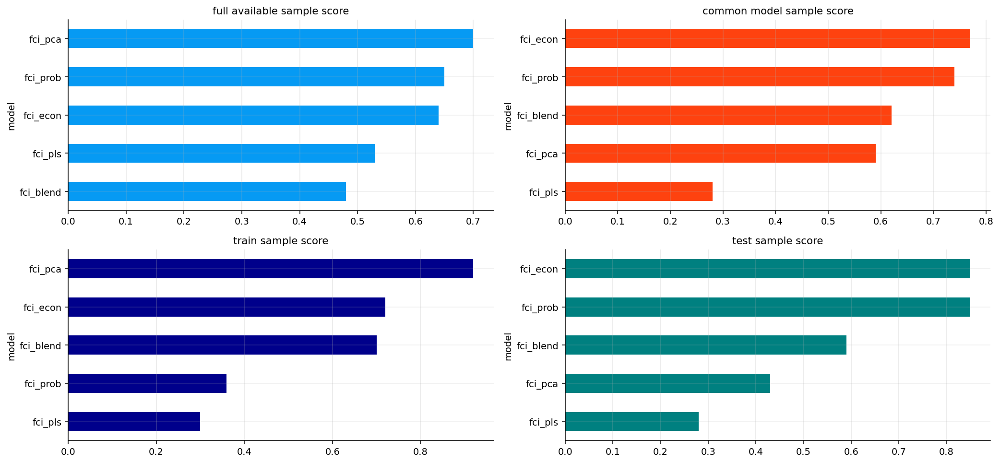
long_history_scoreboard = full_sample_scoreboard.loc[full_sample_scoreboard["long_history_eligible"]]
long_history_fci_name = long_history_scoreboard.index[0] if len(long_history_scoreboard) else full_sample_scoreboard.index[0]
long_history_fci_series = fci_models[long_history_fci_name].rename("long_history_fci")
long_history_fci_percentile = rolling_percentile(long_history_fci_series, 60).rename("long_history_fci_percentile")
fig, axes = plt.subplots(2, 1, figsize=(10, 6), sharex=True)
long_history_fci_series.dropna().plot(ax=axes[0], lw=1.4, color=colors[0], label=long_history_fci_name)
long_history_fci_percentile.dropna().plot(ax=axes[1], lw=1.2, color=colors[1], label="percentile")
axes[0].axhline(0.0, color="black", lw=0.8, alpha=0.5)
axes[1].axhline(0.8, color=colors[5], lw=0.8, alpha=0.6)
axes[1].axhline(0.2, color=colors[7], lw=0.8, alpha=0.6)
axes[0].set_title("long-history fci: " + long_history_fci_name)
axes[1].set_title("long-history fci percentile")
for ax in axes:
ax.legend(loc="upper left")
ax.grid(True, alpha=0.25)
plt.tight_layout()
plt.show()
selected_nfci = pd.concat([nfci_month["nfci"], long_history_fci_series], axis=1).dropna()
fig, axes = plt.subplots(2, 1, figsize=(10, 6), sharex=True)
selected_nfci.plot(ax=axes[0], lw=1.1, color=[colors[0], colors[1]])
axes[0].axhline(0.0, color="black", lw=0.8, alpha=0.5)
axes[0].set_title("long-history fci versus nfci")
rolling_selected_nfci_corr = selected_nfci["long_history_fci"].rolling(36).corr(selected_nfci["nfci"])
rolling_selected_nfci_corr.dropna().plot(ax=axes[1], lw=1.2, color=colors[2])
axes[1].axhline(0.0, color="black", lw=0.8, alpha=0.5)
axes[1].set_title("rolling 36 month correlation")
for ax in axes:
ax.grid(True, alpha=0.25)
plt.tight_layout()
plt.show()
nfci_corr = pd.DataFrame({"selected_fci_model": [long_history_fci_name], "correlation_with_nfci": [selected_nfci["long_history_fci"].corr(selected_nfci["nfci"])]}).set_index("selected_fci_model")
display(nfci_corr.round(3))
crisis_rows = []
for name, dates in crisis_windows.items():
window = selected_nfci.loc[dates[0]:dates[1]]
if len(window):
crisis_rows.append({"window": name, "mean_selected_fci": window["long_history_fci"].mean(), "mean_nfci": window["nfci"].mean(), "agreement": float((np.sign(window["long_history_fci"]) == np.sign(window["nfci"])).mean())})
crisis_agreement_table = pd.DataFrame(crisis_rows).set_index("window")
display(crisis_agreement_table.round(3))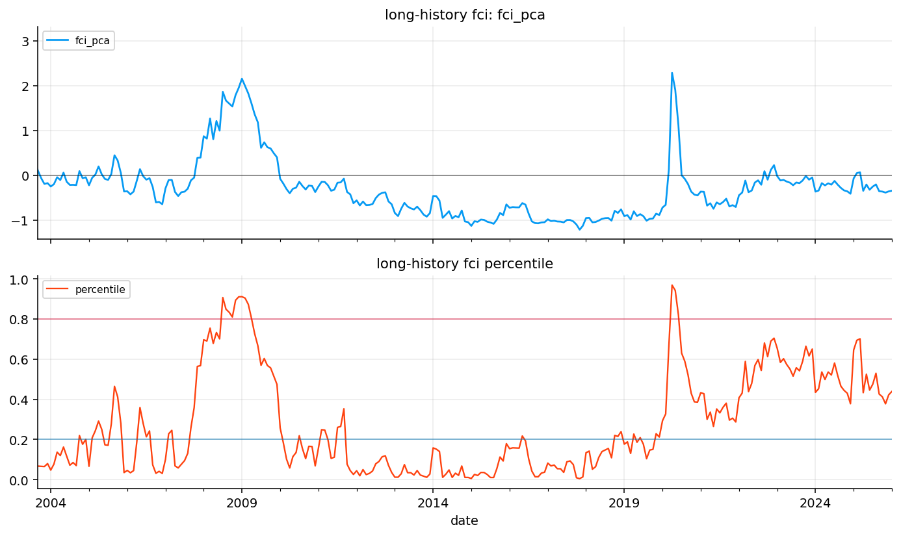
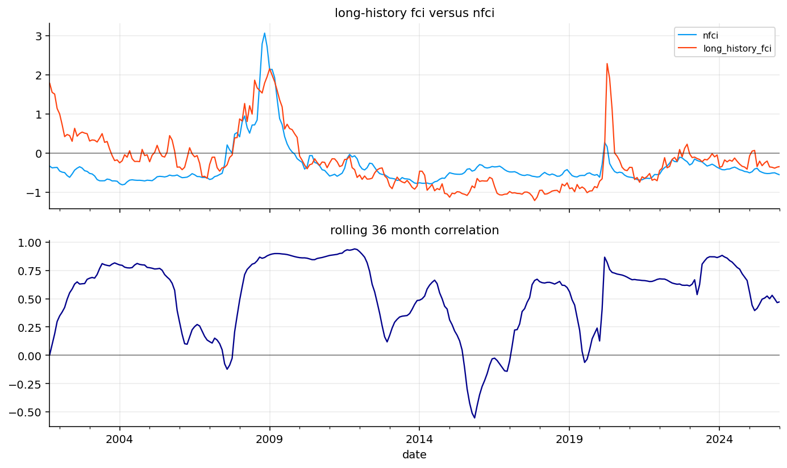
| correlation_with_nfci | |
|---|---|
| selected_fci_model | |
| fci_pca | 0.531 |
| mean_selected_fci | mean_nfci | agreement | |
|---|---|---|---|
| window | |||
| financial_crisis | 1.833 | 2.364 | 1.0 |
| covid_crash | 0.584 | 0.043 | 1.0 |
| inflation_rate_shock | -0.219 | -0.281 | 0.9 |
sector_assets = us_sector_assets[:]
defensive_sector_assets = [x for x in ["xlp", "xlu", "xlv"] if x in returns.columns]
cyclical_sector_assets = [x for x in ["xlf", "xli", "xly", "xlb"] if x in returns.columns]
inflation_assets = [x for x in ["xle", "xlb", "dbc", "gld"] if x in returns.columns]
rate_sensitive_assets = [x for x in ["xlk", "xly", "tlt"] if x in returns.columns]
strategy_assets = sorted(set(sector_assets + defensive_assets + ["spy"]))
required_strategy_assets = sector_assets + ["spy", "cash"]
asset_first_month = monthly_close[sector_assets + ["spy"]].apply(pd.Series.first_valid_index)
strategy_start = max(macro_start, asset_first_month.max() + pd.offsets.MonthEnd(6))
score_strategy_dates = fci_models.index.intersection(returns.index)
score_strategy_dates = score_strategy_dates[score_strategy_dates >= strategy_start]
strategy_split_date = score_strategy_dates[int(len(score_strategy_dates) * 0.65)] if len(score_strategy_dates) else pd.NaT
strategy_test_dates = score_strategy_dates[score_strategy_dates >= strategy_split_date]
strategy_sample_scoreboard = score_fci_models(fci_models.reindex(strategy_test_dates), target_table.reindex(strategy_test_dates))
strategy_sample_scoreboard["strategy_test_sample"] = True
prespecified_strategy_fci_name = long_history_fci_name
strategy_fci_name = prespecified_strategy_fci_name if prespecified_strategy_fci_name in fci_models.columns else "fci_econ"
best_fci_name = strategy_fci_name
best_fci_series = fci_models[best_fci_name].rename("best_fci")
best_fci_percentile = rolling_percentile(best_fci_series, 60).rename("best_fci_percentile")
best_fci_3m_change = best_fci_series.diff(3).rename("best_fci_3m_change")
tradable_macro = macro.shift(1)
allocation_features = tradable_macro[["inflation_pressure_block", "policy_rate_pressure_block", "growth_recession_block", "macro_breadth_conflict_block", "goldilocks_support"]].copy()
allocation_features["best_fci_percentile"] = best_fci_percentile.shift(1)
allocation_features["best_fci_3m_change"] = best_fci_3m_change.shift(1)
allocation_features["best_fci_value"] = best_fci_series.shift(1)
dominant_block_values = tradable_macro[block_cols].abs()
dominant_macro_block = pd.Series(np.nan, index=dominant_block_values.index, dtype=object)
has_dominant_block = dominant_block_values.notna().any(axis=1)
dominant_macro_block.loc[has_dominant_block] = dominant_block_values.loc[has_dominant_block].idxmax(axis=1)
allocation_features["dominant_macro_block"] = dominant_macro_block
allocation_features = allocation_features.dropna(subset=["best_fci_percentile", "best_fci_3m_change"])
model_choice_table = pd.DataFrame({
"full_sample_score_winner": [full_sample_scoreboard.index[0]],
"common_sample_score_winner": [common_model_scoreboard.index[0]],
"test_sample_score_winner": [test_model_scoreboard.index[0]],
"selected_strategy_fci": [strategy_fci_name],
"selection_rule": ["Pre-specified long-history unsupervised FCI selected to avoid supervised model-selection lookahead and preserve crisis coverage."],
})
display(strategy_sample_scoreboard.round(4))
display(model_choice_table)
display(pd.DataFrame({"long_history_fci": [long_history_fci_name], "prespecified_strategy_fci": [strategy_fci_name], "strategy_start": [strategy_start], "strategy_test_start": [strategy_split_date]}))
fig, ax = plt.subplots(figsize=(7, 3.5))
strategy_sample_scoreboard["final_score"].sort_values().plot(kind="barh", ax=ax, color=colors[2])
ax.set_title("strategy test sample score")
ax.grid(True, axis="x", alpha=0.3)
plt.tight_layout()
plt.show()| observations | first_valid_date | last_valid_date | future_stress_rank_ic | drawdown_spread | monotonicity_score | volatility_spread | stability_score | future_stress_rank_ic_rank | drawdown_spread_rank | monotonicity_score_rank | volatility_spread_rank | stability_score_rank | final_score | strategy_test_sample | |
|---|---|---|---|---|---|---|---|---|---|---|---|---|---|---|---|
| model | |||||||||||||||
| fci_econ | 112 | 2016-10-31 | 2026-01-31 | 0.1950 | 0.0198 | 0.4 | 0.1163 | 0.7749 | 1.0 | 0.8 | 0.9 | 1.0 | 0.4 | 0.87 | True |
| fci_prob | 112 | 2016-10-31 | 2026-01-31 | 0.1456 | 0.0230 | 0.3 | 0.0381 | 0.7322 | 0.8 | 1.0 | 0.6 | 0.4 | 0.2 | 0.69 | True |
| fci_pca | 112 | 2016-10-31 | 2026-01-31 | 0.0822 | 0.0128 | 0.1 | 0.0905 | 0.7790 | 0.6 | 0.6 | 0.4 | 0.8 | 0.6 | 0.59 | True |
| fci_blend | 112 | 2016-10-31 | 2026-01-31 | 0.0562 | 0.0085 | 0.4 | 0.0835 | 0.8051 | 0.4 | 0.4 | 0.9 | 0.6 | 0.8 | 0.57 | True |
| fci_pls | 112 | 2016-10-31 | 2026-01-31 | -0.1588 | -0.0139 | -0.7 | -0.0274 | 0.8466 | 0.2 | 0.2 | 0.2 | 0.2 | 1.0 | 0.28 | True |
| full_sample_score_winner | common_sample_score_winner | test_sample_score_winner | selected_strategy_fci | selection_rule | |
|---|---|---|---|---|---|
| 0 | fci_pca | fci_econ | fci_econ | fci_pca | Pre-specified long-history unsupervised FCI se... |
| long_history_fci | prespecified_strategy_fci | strategy_start | strategy_test_start | |
|---|---|---|---|---|
| 0 | fci_pca | fci_pca | 1999-07-31 | 2016-10-31 |
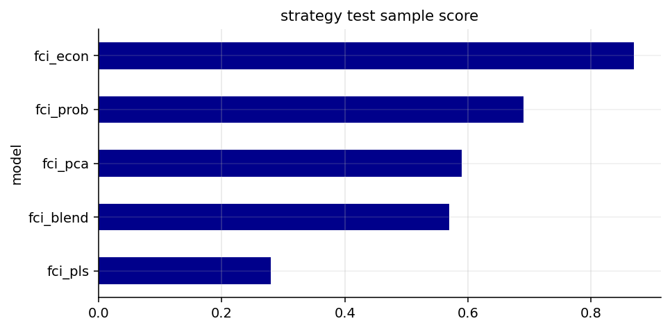
regime_data = pd.concat([best_fci_percentile.rename("fci_percentile"), returns[sector_assets].shift(-1)], axis=1).dropna(subset=["fci_percentile"])
regime_data["fci_quintile"] = pd.qcut(regime_data["fci_percentile"].rank(method="first"), 5, labels=["q1", "q2", "q3", "q4", "q5"])
sector_return_by_regime = regime_data.groupby("fci_quintile", observed=False)[sector_assets].mean()
sector_vol_by_regime = regime_data.groupby("fci_quintile", observed=False)[sector_assets].std() * np.sqrt(12.0)
fig, axes = plt.subplots(1, 2, figsize=(16, 4.5))
for ax, table, title, cmap in [(axes[0], sector_return_by_regime, "sector return by fci quintile", "RdYlGn"), (axes[1], sector_vol_by_regime, "sector volatility by fci quintile", "magma")]:
shown = table.transpose()
im = ax.imshow(shown, aspect="auto", cmap=cmap)
ax.set_xticks(range(len(shown.columns)))
ax.set_xticklabels(shown.columns)
ax.set_yticks(range(len(shown.index)))
ax.set_yticklabels(shown.index)
for row in range(shown.shape[0]):
for col in range(shown.shape[1]):
value = shown.iloc[row, col]
if np.isfinite(value):
ax.text(col, row, f"{value:.2f}", ha="center", va="center", fontsize=7)
ax.set_title(title)
fig.colorbar(im, ax=ax, fraction=0.046, pad=0.04)
plt.tight_layout()
plt.show()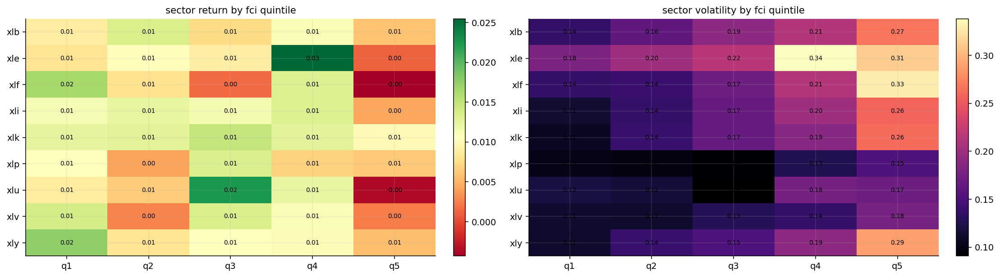
def_cyc_ret = returns[defensive_sector_assets].mean(axis=1) - returns[cyclical_sector_assets].mean(axis=1)
def_cyc_spread = (1.0 + def_cyc_ret.fillna(0.0)).cumprod() - 1.0
ax = def_cyc_spread.plot(figsize=(10, 3.5), lw=1.2)
ax.axhline(0.0, color="black", lw=0.8)
ax.set_title("defensive minus cyclical spread")
ax.grid(True, alpha=0.3)
plt.tight_layout()
plt.show()
high_inflation_policy = (macro["inflation_pressure_block"] + macro["policy_rate_pressure_block"]).reindex(returns.index) > 1.0
high_policy = macro["policy_rate_pressure_block"].reindex(returns.index) > 1.0
display(returns.loc[high_inflation_policy.fillna(False), inflation_assets].mean().to_frame("average_monthly_return").round(4))
display(returns.loc[high_policy.fillna(False), rate_sensitive_assets].mean().to_frame("average_monthly_return").round(4))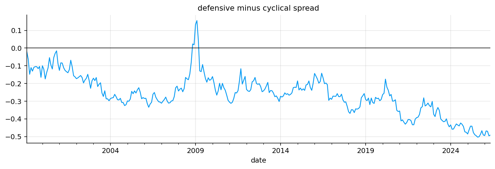
| average_monthly_return | |
|---|---|
| xle | 0.0173 |
| xlb | 0.0099 |
| dbc | 0.0197 |
| gld | 0.0151 |
| average_monthly_return | |
|---|---|
| xlk | NaN |
| xly | NaN |
| tlt | NaN |
def cross_z(frame):
mean = frame.mean(axis=1)
std = frame.std(axis=1, ddof=1).replace(0.0, np.nan)
return frame.sub(mean, axis=0).div(std, axis=0).fillna(0.0)
def cap_weights(weights, cap=0.40):
weights = pd.Series(weights, dtype=float).clip(lower=0.0)
if weights.sum() <= 1e-12:
return weights
weights = weights / weights.sum()
for _ in range(20):
over = weights > cap
if not over.any():
break
excess = (weights[over] - cap).sum()
weights[over] = cap
room = (cap - weights[~over]).clip(lower=0.0)
if room.sum() <= 1e-12:
break
weights.loc[room.index] += excess * room / room.sum()
return weights / weights.sum()
def momentum_score(ret, assets):
data = ret[assets]
mom_12_1 = (1.0 + data.shift(1)).rolling(11).apply(np.prod, raw=True) - 1.0
ret_6 = (1.0 + data.shift(1)).rolling(6).apply(np.prod, raw=True) - 1.0
vol_6 = data.shift(1).rolling(6).std(ddof=1) * np.sqrt(12.0)
return 0.60 * cross_z(mom_12_1) + 0.40 * cross_z(ret_6 / vol_6.replace(0.0, np.nan))sector_momentum_score = momentum_score(returns, sector_assets)
sector_vol = returns[sector_assets].rolling(6).std(ddof=1) * np.sqrt(12.0)
strategy_end = min(allocation_features.index.max(), returns_raw.index.max())
strategy_dates = allocation_features.index.intersection(returns_raw.index)
strategy_dates = strategy_dates[(strategy_dates >= strategy_start) & (strategy_dates <= strategy_end)]
strategy_returns = returns_raw.loc[strategy_dates.min():strategy_end, strategy_assets]
missing_share = strategy_returns.isna().mean()
display(missing_share.to_frame("missing_share_in_strategy_window"))
strategy_returns = strategy_returns.fillna(0.0)
stress = allocation_features["best_fci_percentile"].reindex(strategy_dates)
slope = allocation_features["best_fci_3m_change"].reindex(strategy_dates).clip(lower=0.0)
risky_weight = pd.Series(1.0, index=stress.index)
risky_weight -= ((stress - 0.60).clip(0.0, 0.25) / 0.25) * 0.35
risky_weight -= (slope.clip(0.0, 0.75) / 0.75) * 0.10
risky_weight = risky_weight.clip(0.50, 1.00).rename("risky_weight")
display(pd.DataFrame({"strategy_start": [strategy_start], "strategy_end": [strategy_end], "strategy_months": [len(strategy_dates)], "latest_month": [strategy_dates.max()], "strategy_fci": [strategy_fci_name], "minimum_risky_weight": [risky_weight.min()]}))| missing_share_in_strategy_window | |
|---|---|
| cash | 0.000000 |
| dbc | 0.108209 |
| gld | 0.052239 |
| ief | 0.000000 |
| shy | 0.000000 |
| spy | 0.000000 |
| tlt | 0.000000 |
| xlb | 0.000000 |
| xle | 0.000000 |
| xlf | 0.000000 |
| xli | 0.000000 |
| xlk | 0.000000 |
| xlp | 0.000000 |
| xlu | 0.000000 |
| xlv | 0.000000 |
| xly | 0.000000 |
| strategy_start | strategy_end | strategy_months | latest_month | strategy_fci | minimum_risky_weight | |
|---|---|---|---|---|---|---|
| 0 | 1999-07-31 | 2026-01-31 | 268 | 2026-01-31 | fci_pca | 0.55 |
def available_assets_at_date(date, candidates, ret):
return [asset for asset in candidates if asset in ret.columns and date in ret.index and pd.notna(ret.loc[date, asset])]
def defensive_sleeve(row):
date = row.name
inflation_policy = row.get("inflation_pressure_block", 0.0) + row.get("policy_rate_pressure_block", 0.0)
growth = row.get("growth_recession_block", 0.0)
inflation = row.get("inflation_pressure_block", 0.0)
if inflation_policy > 1.0:
candidates = ["gld", "dbc", "shy", "cash"]
elif growth > 0.75 and inflation <= 0.75:
candidates = ["ief", "shy", "gld", "cash"]
else:
candidates = ["cash", "shy", "ief"]
picked = available_assets_at_date(date, [x for x in candidates if x in defensive_assets], returns_raw)
if not picked:
picked = ["cash"]
out = pd.Series(0.0, index=defensive_assets)
out.loc[picked] = 1.0 / len(picked)
return out
def macro_fit_scores(features, assets):
rows = []
for date, row in features.iterrows():
score = pd.Series(0.0, index=assets)
for asset in assets:
if asset in defensive_sector_assets:
score.loc[asset] += 0.70 * row["best_fci_percentile"] + 0.45 * row["growth_recession_block"]
if asset in cyclical_sector_assets:
score.loc[asset] += 0.80 * (1.0 - row["best_fci_percentile"]) - 0.40 * row["growth_recession_block"] - 0.30 * row["macro_breadth_conflict_block"]
if asset in inflation_assets:
score.loc[asset] += 0.55 * row["inflation_pressure_block"] - 0.25 * max(row["growth_recession_block"], 0.0)
if asset in rate_sensitive_assets:
score.loc[asset] -= 0.45 * row["policy_rate_pressure_block"]
if asset == "xlf":
score.loc[asset] -= 0.35 * max(row["policy_rate_pressure_block"], 0.0) * max(row["growth_recession_block"], 0.0)
rows.append(score.rename(date))
return cross_z(pd.concat(rows, axis=1).transpose())equal_rows = []
momentum_rows = []
gated_rows = []
for date in strategy_dates:
row_equal = pd.Series(0.0, index=strategy_assets)
row_equal.loc[sector_assets] = 1.0 / len(sector_assets)
equal_rows.append(row_equal.rename(date))
row_mom = pd.Series(0.0, index=strategy_assets)
picked = sector_momentum_score.loc[date, sector_assets].dropna().sort_values(ascending=0).head(3).index.tolist()
if picked:
inv = (1.0 / sector_vol.loc[date, picked].replace(0.0, np.nan)).replace([np.inf, -np.inf], np.nan).dropna()
row_mom.loc[inv.index] = cap_weights(inv if len(inv) else pd.Series(1.0, index=picked), 0.40)
momentum_rows.append(row_mom.rename(date))
row_gated = row_equal * float(risky_weight.loc[date])
sleeve = defensive_sleeve(allocation_features.loc[date])
row_gated.loc[sleeve.index] += (1.0 - float(risky_weight.loc[date])) * sleeve
gated_rows.append(row_gated.rename(date))
equal_sector_weights = pd.concat(equal_rows, axis=1).transpose().fillna(0.0)
momentum_weights = pd.concat(momentum_rows, axis=1).transpose().fillna(0.0)
gated_weights = pd.concat(gated_rows, axis=1).transpose().fillna(0.0)macro_fit_score = macro_fit_scores(allocation_features.reindex(strategy_dates), sector_assets)
macro_support_score = cross_z(pd.DataFrame({asset: 0.20 * allocation_features["goldilocks_support"].reindex(strategy_dates) - 0.20 * allocation_features["macro_breadth_conflict_block"].reindex(strategy_dates) + (0.35 * allocation_features["inflation_pressure_block"].reindex(strategy_dates) if asset in inflation_assets else 0.0) for asset in sector_assets}))
recent_risk_penalty = cross_z(sector_vol.reindex(strategy_dates).fillna(0.0)) + cross_z((-returns[sector_assets].rolling(3).sum()).reindex(strategy_dates).clip(lower=0.0).fillna(0.0))
final_sector_score = 0.65 * sector_momentum_score.reindex(strategy_dates) + 0.20 * macro_fit_score + 0.10 * macro_support_score - 0.05 * recent_risk_penalty
fci_momentum_rows = []
selected_sector_rows = []
for date in strategy_dates:
row = pd.Series(0.0, index=strategy_assets)
picked = final_sector_score.loc[date, sector_assets].dropna().sort_values(ascending=0).head(3).index.tolist()
if picked:
inv = (1.0 / sector_vol.loc[date, picked].replace(0.0, np.nan)).replace([np.inf, -np.inf], np.nan).dropna()
row.loc[inv.index] = cap_weights(inv if len(inv) else pd.Series(1.0, index=picked), 0.40) * float(risky_weight.loc[date])
sleeve = defensive_sleeve(allocation_features.loc[date])
row.loc[sleeve.index] += (1.0 - float(risky_weight.loc[date])) * sleeve
fci_momentum_rows.append(row.rename(date))
selected_sector_rows.append({"date": date, "selected": ", ".join(picked)})
fci_momentum_weights = pd.concat(fci_momentum_rows, axis=1).transpose().fillna(0.0)
selected_sector_table = pd.DataFrame(selected_sector_rows).set_index("date")
display(selected_sector_table.tail(12))| selected | |
|---|---|
| date | |
| 2025-02-28 | xly, xlf, xlu |
| 2025-03-31 | xlf, xlu, xly |
| 2025-04-30 | xlf, xlu, xlp |
| 2025-05-31 | xlf, xly, xlp |
| 2025-06-30 | xlf, xlu, xli |
| 2025-07-31 | xlu, xlf, xli |
| 2025-08-31 | xlu, xli, xlf |
| 2025-09-30 | xlf, xly, xli |
| 2025-10-31 | xly, xlk, xli |
| 2025-11-30 | xlk, xly, xli |
| 2025-12-31 | xli, xlk, xlu |
| 2026-01-31 | xli, xlk, xly |
plot_weights = fci_momentum_weights[sector_assets + defensive_assets].tail(60)
plot_weights = plot_weights.loc[:, plot_weights.mean().sort_values(ascending=False).index]
fig, axes = plt.subplots(2, 1, figsize=(12, 7), gridspec_kw={"height_ratios": [2.4, 1.0]})
im = axes[0].imshow(plot_weights.T, aspect="auto", cmap="Blues", vmin=0.0, vmax=max(0.40, float(plot_weights.max().max())))
axes[0].set_yticks(range(len(plot_weights.columns)))
axes[0].set_yticklabels(plot_weights.columns)
step = max(1, len(plot_weights.index) // 8)
locs = list(range(0, len(plot_weights.index), step))
axes[0].set_xticks(locs)
axes[0].set_xticklabels([plot_weights.index[i].strftime("%Y-%m") for i in locs], rotation=45, ha="right")
axes[0].set_title("fci momentum weights, last 60 months")
fig.colorbar(im, ax=axes[0], fraction=0.025, pad=0.02)
risky_weight.reindex(plot_weights.index).plot(ax=axes[1], lw=1.6, color=colors[0], label="risky weight")
(1.0 - risky_weight).reindex(plot_weights.index).plot(ax=axes[1], lw=1.6, color=colors[1], label="defensive weight")
axes[1].set_ylim(0.0, 1.05)
axes[1].set_title("risk allocation sleeve")
axes[1].legend(loc="upper left")
axes[1].grid(True, alpha=0.25)
plt.tight_layout()
plt.show()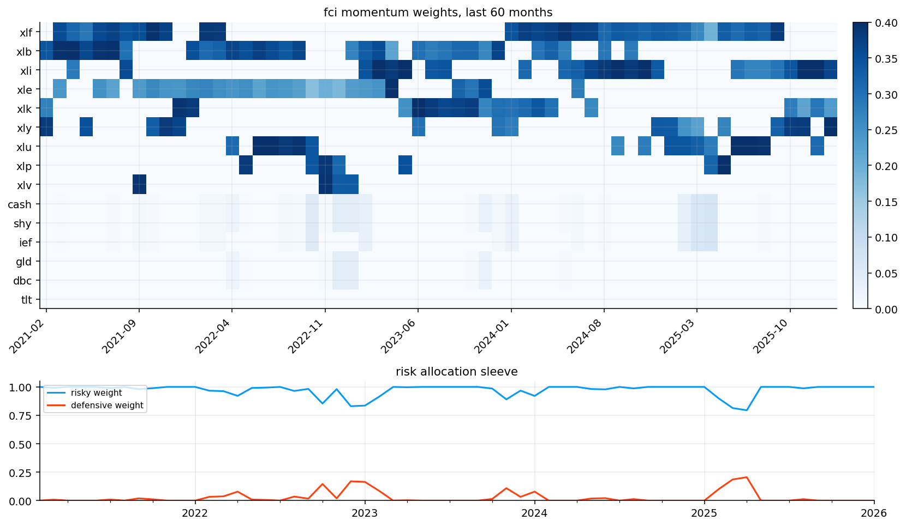
spy_weights = equal_sector_weights.copy() * 0.0
spy_weights["spy"] = 1.0
weights_by_strategy = {"equal_weight_sectors": equal_sector_weights, "momentum_rotation": momentum_weights, "fci_gated_basket": gated_weights, "fci_momentum_rotation": fci_momentum_weights, "spy_buy_hold": spy_weights}
backtest_results = run_many_weights_backtests(weights_by_strategy, returns=strategy_returns, cost_bps=5.0, weight_timing="next_close")
performance_table = build_metrics_table(backtest_results, rf_daily=rf_monthly, annualization=12.0)
trade_table = build_trade_table(backtest_results)
performance_table.columns = [str(col).lower().replace(" ", "_") for col in performance_table.columns]
trade_table.columns = [str(col).lower().replace(" ", "_") for col in trade_table.columns]
strategy_return_table = pd.concat({name: result.net_returns for name, result in backtest_results.items()}, axis=1).fillna(0.0)
strategy_nav_table = pd.concat({name: result.net_values for name, result in backtest_results.items()}, axis=1)
rolling_12m = (1.0 + strategy_return_table).rolling(12).apply(np.prod, raw=True) - 1.0
performance_table["hit_rate"] = (strategy_return_table > 0).mean()
performance_table["worst_12m_return"] = rolling_12m.min()
performance_table["turnover"] = trade_table["avg_turnover"]
performance_table["cost_drag"] = trade_table["cost_drag"]
display(performance_table.round(4))
full_defensive_first_month = monthly_close[optional_defensive_assets].apply(pd.Series.first_valid_index).max()
full_defensive_start = max(strategy_start, full_defensive_first_month + pd.offsets.MonthEnd(6))
full_defensive_dates = strategy_dates[strategy_dates >= full_defensive_start]
full_defensive_returns = returns_raw.loc[full_defensive_dates.min():strategy_end, strategy_assets]
display(full_defensive_returns.isna().mean().to_frame("missing_share_in_full_defensive_window"))
full_defensive_weights = {name: weights.reindex(full_defensive_dates).dropna(how="all") for name, weights in weights_by_strategy.items()}
full_defensive_results = run_many_weights_backtests(full_defensive_weights, returns=full_defensive_returns.fillna(0.0), cost_bps=5.0, weight_timing="next_close")
full_defensive_performance_table = build_metrics_table(full_defensive_results, rf_daily=rf_monthly, annualization=12.0)
full_defensive_performance_table.columns = [str(col).lower().replace(" ", "_") for col in full_defensive_performance_table.columns]
display(pd.DataFrame({"full_defensive_start": [full_defensive_start], "full_defensive_months": [len(full_defensive_dates)]}))
display(full_defensive_performance_table.round(4))| cagr | vol | sharpe | max_drawdown | calmar | sortino | hit_rate | worst_12m_return | turnover | cost_drag | |
|---|---|---|---|---|---|---|---|---|---|---|
| Strategy | ||||||||||
| equal_weight_sectors | 0.1070 | 0.1433 | 0.5069 | -0.4913 | 0.2178 | 0.6570 | 0.6704 | -0.4294 | 0.0136 | 0.0006 |
| momentum_rotation | 0.1099 | 0.1384 | 0.5379 | -0.3766 | 0.2918 | 0.7544 | 0.6292 | -0.3225 | 0.2632 | 0.0124 |
| fci_gated_basket | 0.1120 | 0.1310 | 0.5752 | -0.3425 | 0.3269 | 0.8295 | 0.6704 | -0.2741 | 0.0343 | 0.0016 |
| fci_momentum_rotation | 0.0990 | 0.1394 | 0.4620 | -0.2553 | 0.3879 | 0.6669 | 0.6367 | -0.2132 | 0.2670 | 0.0164 |
| spy_buy_hold | 0.1086 | 0.1449 | 0.5132 | -0.5078 | 0.2139 | 0.6859 | 0.6704 | -0.4342 | 0.0019 | 0.0000 |
| missing_share_in_full_defensive_window | |
|---|---|
| cash | 0.0 |
| dbc | 0.0 |
| gld | 0.0 |
| ief | 0.0 |
| shy | 0.0 |
| spy | 0.0 |
| tlt | 0.0 |
| xlb | 0.0 |
| xle | 0.0 |
| xlf | 0.0 |
| xli | 0.0 |
| xlk | 0.0 |
| xlp | 0.0 |
| xlu | 0.0 |
| xlv | 0.0 |
| xly | 0.0 |
| full_defensive_start | full_defensive_months | |
|---|---|---|
| 0 | 2006-08-31 | 234 |
| cagr | vol | sharpe | max_drawdown | calmar | sortino | |
|---|---|---|---|---|---|---|
| Strategy | ||||||
| equal_weight_sectors | 0.1038 | 0.1508 | 0.4675 | -0.4913 | 0.2112 | 0.6162 |
| momentum_rotation | 0.1065 | 0.1432 | 0.5066 | -0.3766 | 0.2829 | 0.7158 |
| fci_gated_basket | 0.1096 | 0.1375 | 0.5367 | -0.3425 | 0.3200 | 0.7864 |
| fci_momentum_rotation | 0.0895 | 0.1427 | 0.4028 | -0.2553 | 0.3504 | 0.5799 |
| spy_buy_hold | 0.1102 | 0.1525 | 0.4985 | -0.5078 | 0.2169 | 0.6770 |
fig, axes = plt.subplots(2, 1, figsize=(11, 7), sharex=True)
for j, col in enumerate(strategy_nav_table.columns):
strategy_nav_table[col].plot(ax=axes[0], lw=1.2, color=colors[j % len(colors)], label=col)
drawdowns = strategy_nav_table.apply(calc_drawdown)
for j, col in enumerate(drawdowns.columns):
drawdowns[col].plot(ax=axes[1], lw=1.0, color=colors[j % len(colors)], label=col)
axes[0].set_title("strategy equity curves")
axes[1].set_title("strategy drawdowns")
axes[0].legend(ncol=2, fontsize=7)
axes[1].legend(ncol=2, fontsize=7)
for ax in axes:
ax.grid(True, alpha=0.25)
plt.tight_layout()
plt.show()
fig, axes = plt.subplots(3, 1, figsize=(11, 8), sharex=True)
for j, col in enumerate(rolling_12m.columns):
rolling_12m[col].plot(ax=axes[0], lw=1.0, color=colors[j % len(colors)], label=col)
rolling_sharpe = (strategy_return_table - rf_monthly).rolling(12).mean() / strategy_return_table.rolling(12).std() * np.sqrt(12.0)
for j, col in enumerate(rolling_sharpe.columns):
rolling_sharpe[col].plot(ax=axes[1], lw=1.0, color=colors[j % len(colors)], label=col)
turnover_table = pd.concat({name: result.turnover for name, result in backtest_results.items()}, axis=1)
for j, col in enumerate(turnover_table.columns):
turnover_table[col].rolling(12).mean().plot(ax=axes[2], lw=1.0, color=colors[j % len(colors)], label=col)
for ax, title in zip(axes, ["rolling 12m return", "rolling 12m sharpe", "rolling 12m turnover"]):
ax.axhline(0.0, color="black", lw=0.8, alpha=0.5)
ax.set_title(title)
ax.grid(True, alpha=0.25)
ax.legend(ncol=2, fontsize=7)
plt.tight_layout()
plt.show()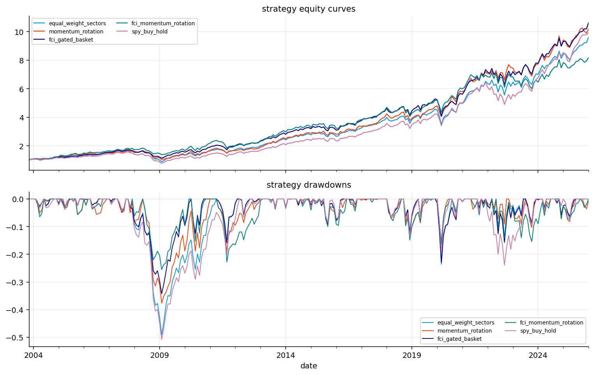
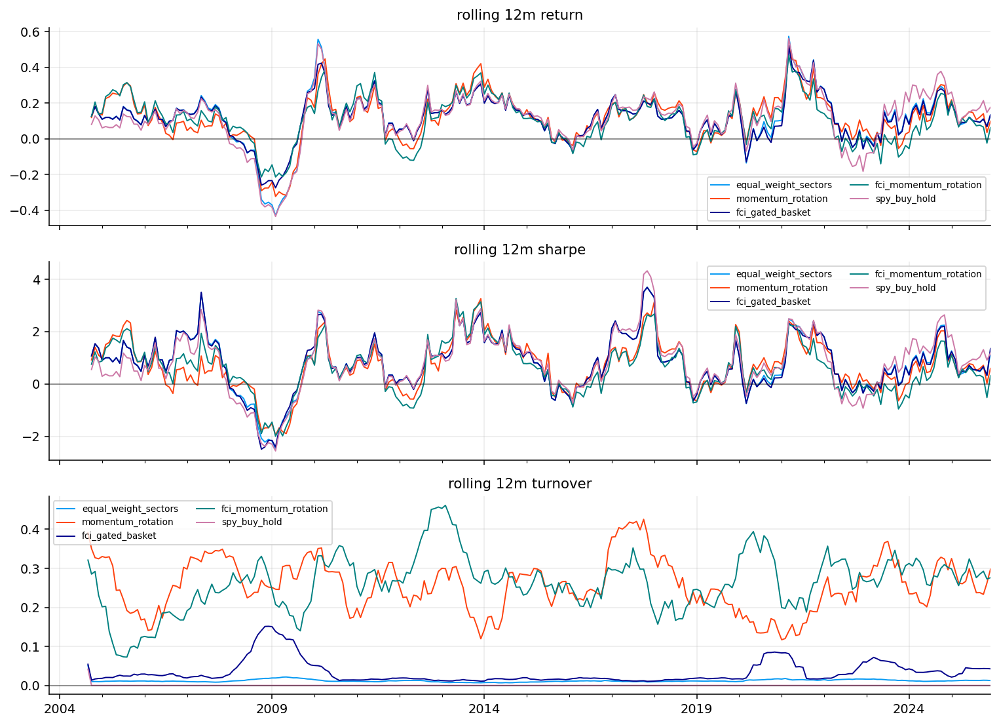
stress_rows = []
for name, dates in crisis_windows.items():
ret_window = strategy_return_table.loc[dates[0]:dates[1]]
if len(ret_window) == 0:
continue
for strategy in ret_window.columns:
stress_rows.append({"window": name, "strategy": strategy, "return": float((1.0 + ret_window[strategy]).prod() - 1.0), "max_drawdown": float(drawdown_series(ret_window[strategy], input_kind="returns").min())})
stress_window_table = pd.DataFrame(stress_rows).set_index(["window", "strategy"])
display(stress_window_table.round(4))| return | max_drawdown | ||
|---|---|---|---|
| window | strategy | ||
| financial_crisis | equal_weight_sectors | -0.3713 | -0.3599 |
| momentum_rotation | -0.2903 | -0.2449 | |
| fci_gated_basket | -0.2094 | -0.2009 | |
| fci_momentum_rotation | -0.1460 | -0.1144 | |
| spy_buy_hold | -0.3695 | -0.3574 | |
| covid_crash | equal_weight_sectors | -0.1227 | -0.1455 |
| momentum_rotation | -0.0686 | -0.0774 | |
| fci_gated_basket | -0.1188 | -0.1402 | |
| fci_momentum_rotation | -0.0669 | -0.0949 | |
| spy_buy_hold | -0.0918 | -0.1249 | |
| inflation_rate_shock | equal_weight_sectors | -0.0619 | -0.1583 |
| momentum_rotation | 0.0152 | -0.0912 | |
| fci_gated_basket | -0.0621 | -0.1552 | |
| fci_momentum_rotation | -0.0387 | -0.1408 | |
| spy_buy_hold | -0.1774 | -0.2025 |
latest_date = fci_momentum_weights.index.max()
latest_features = allocation_features.loc[latest_date]
decision_rows = []
for asset in sector_assets + defensive_assets:
momentum_value = sector_momentum_score.get(asset, pd.Series(0.0, index=strategy_dates)).reindex(strategy_dates).loc[latest_date] if asset in sector_assets else 0.0
fit_value = macro_fit_score.get(asset, pd.Series(0.0, index=strategy_dates)).loc[latest_date] if asset in sector_assets else 0.0
support_value = macro_support_score.get(asset, pd.Series(0.0, index=strategy_dates)).loc[latest_date] if asset in sector_assets else 0.0
penalty_value = recent_risk_penalty.get(asset, pd.Series(0.0, index=strategy_dates)).loc[latest_date] if asset in sector_assets else 0.0
final_value = final_sector_score.get(asset, pd.Series(0.0, index=strategy_dates)).loc[latest_date] if asset in sector_assets else 0.0
weight_value = fci_momentum_weights.loc[latest_date, asset] if asset in fci_momentum_weights.columns else 0.0
if asset in inflation_assets and latest_features["inflation_pressure_block"] > 0.75 and weight_value > 0:
reason = "inflation hedge"
elif asset in defensive_assets and latest_features["best_fci_percentile"] > 0.65 and weight_value > 0:
reason = "defensive stress protection"
elif asset in rate_sensitive_assets and latest_features["policy_rate_pressure_block"] > 0.75 and fit_value < 0:
reason = "rate-pressure penalty"
elif asset in cyclical_sector_assets and latest_features["best_fci_percentile"] < 0.45 and weight_value > 0:
reason = "risk-on cyclical"
elif momentum_value < 0 and weight_value <= 1e-8:
reason = "weak momentum"
else:
reason = "macro stress exclusion" if weight_value <= 1e-8 else "risk-on cyclical"
decision_rows.append({"date": latest_date, "selected fci model": strategy_fci_name, "selected fci value": latest_features["best_fci_value"], "selected fci percentile": latest_features["best_fci_percentile"], "selected fci 3m change": latest_features["best_fci_3m_change"], "dominant macro block": latest_features["dominant_macro_block"], "sector": asset, "momentum_score": momentum_value, "macro_fit_score": fit_value, "macro_support_score": support_value, "recent_risk_penalty": penalty_value, "final_score": final_value, "portfolio_weight": weight_value, "short reason category": reason})
latest_decision_board = pd.DataFrame(decision_rows).sort_values("portfolio_weight", ascending=0)
display(latest_decision_board.round(4))| date | selected fci model | selected fci value | selected fci percentile | selected fci 3m change | dominant macro block | sector | momentum_score | macro_fit_score | macro_support_score | recent_risk_penalty | final_score | portfolio_weight | short reason category | |
|---|---|---|---|---|---|---|---|---|---|---|---|---|---|---|
| 8 | 2026-01-31 | fci_pca | -0.3627 | 0.422 | -0.0043 | labor_cooling_block | xly | 0.0403 | 1.0952 | -0.5040 | -1.7777 | 0.2837 | 0.4000 | risk-on cyclical |
| 3 | 2026-01-31 | fci_pca | -0.3627 | 0.422 | -0.0043 | labor_cooling_block | xli | 0.7609 | 0.6635 | -0.5040 | -1.4127 | 0.6475 | 0.3667 | risk-on cyclical |
| 4 | 2026-01-31 | fci_pca | -0.3627 | 0.422 | -0.0043 | labor_cooling_block | xlk | 1.4418 | -1.2853 | -0.5040 | 3.0926 | 0.4751 | 0.2333 | risk-on cyclical |
| 2 | 2026-01-31 | fci_pca | -0.3627 | 0.422 | -0.0043 | labor_cooling_block | xlf | -0.1387 | 0.6635 | -0.5040 | -1.4445 | 0.0644 | 0.0000 | weak momentum |
| 1 | 2026-01-31 | fci_pca | -0.3627 | 0.422 | -0.0043 | labor_cooling_block | xle | -0.0821 | -0.8236 | 1.7638 | 1.1999 | -0.1017 | 0.0000 | weak momentum |
| 5 | 2026-01-31 | fci_pca | -0.3627 | 0.422 | -0.0043 | labor_cooling_block | xlp | -1.4599 | -0.6234 | -0.5040 | -0.2562 | -1.1112 | 0.0000 | weak momentum |
| 0 | 2026-01-31 | fci_pca | -0.3627 | 0.422 | -0.0043 | labor_cooling_block | xlb | -0.7140 | 1.5569 | 1.7638 | 0.4703 | 0.0002 | 0.0000 | weak momentum |
| 6 | 2026-01-31 | fci_pca | -0.3627 | 0.422 | -0.0043 | labor_cooling_block | xlu | 0.0864 | -0.6234 | -0.5040 | 0.5112 | -0.1445 | 0.0000 | macro stress exclusion |
| 7 | 2026-01-31 | fci_pca | -0.3627 | 0.422 | -0.0043 | labor_cooling_block | xlv | 0.0653 | -0.6234 | -0.5040 | -0.3828 | -0.1135 | 0.0000 | macro stress exclusion |
| 9 | 2026-01-31 | fci_pca | -0.3627 | 0.422 | -0.0043 | labor_cooling_block | cash | 0.0000 | 0.0000 | 0.0000 | 0.0000 | 0.0000 | 0.0000 | macro stress exclusion |
| 10 | 2026-01-31 | fci_pca | -0.3627 | 0.422 | -0.0043 | labor_cooling_block | shy | 0.0000 | 0.0000 | 0.0000 | 0.0000 | 0.0000 | 0.0000 | macro stress exclusion |
| 11 | 2026-01-31 | fci_pca | -0.3627 | 0.422 | -0.0043 | labor_cooling_block | ief | 0.0000 | 0.0000 | 0.0000 | 0.0000 | 0.0000 | 0.0000 | macro stress exclusion |
| 12 | 2026-01-31 | fci_pca | -0.3627 | 0.422 | -0.0043 | labor_cooling_block | tlt | 0.0000 | 0.0000 | 0.0000 | 0.0000 | 0.0000 | 0.0000 | macro stress exclusion |
| 13 | 2026-01-31 | fci_pca | -0.3627 | 0.422 | -0.0043 | labor_cooling_block | gld | 0.0000 | 0.0000 | 0.0000 | 0.0000 | 0.0000 | 0.0000 | macro stress exclusion |
| 14 | 2026-01-31 | fci_pca | -0.3627 | 0.422 | -0.0043 | labor_cooling_block | dbc | 0.0000 | 0.0000 | 0.0000 | 0.0000 | 0.0000 | 0.0000 | macro stress exclusion |
fig, axes = plt.subplots(1, 3, figsize=(17, 4.5))
latest_decision_board.set_index("sector")["final_score"].sort_values().plot(kind="barh", ax=axes[0])
latest_decision_board.set_index("sector")["portfolio_weight"].sort_values().plot(kind="barh", ax=axes[1])
macro.loc[latest_date, block_cols].sort_values().plot(kind="barh", ax=axes[2])
for ax, title in zip(axes, ["latest sector scores", "latest portfolio weights", "latest macro blocks"]):
ax.set_title(title)
ax.grid(True, axis="x", alpha=0.3)
plt.tight_layout()
plt.show()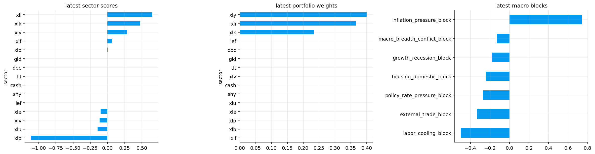
from quantfinlab.dataio import load_macro_factors, load_yfinance_panel
from quantfinlab.portfolio import prices_to_returns
from quantfinlab.backtest.portfolio import run_many_weights_backtests
from quantfinlab.portfolio.selection import build_metrics_table, build_trade_table
from quantfinlab.macro.indicators import inflation_level_pressure, inflation_impulse, inflation_acceleration, inflation_diffusion, policy_tightness, policy_shock, real_rate_squeeze, policy_catchup_risk, growth_momentum_stress, growth_acceleration_stress, growth_breadth_stress, survey_warning, labor_cooling, sahm_pressure, housing_impulse_stress, housing_rate_squeeze, external_demand_stress, external_vulnerability, stress_breadth, severe_stress_breadth, stagflation_pressure, goldilocks_support, inflation_pressure_block, policy_rate_pressure_block, growth_recession_block, labor_cooling_block, housing_domestic_block, external_trade_block, macro_breadth_conflict_block
from quantfinlab.macro.models import economic_fci, pca_fci, targeted_pls_fci, stress_probability_fci, blended_fci, fci_percentile, fci_change, future_stress_target, fci_quintile_report, fci_model_scores
from quantfinlab.macro.allocation import equal_sector_weights, momentum_sector_weights, fci_gated_weights, fci_momentum_weights, latest_decision_table
from quantfinlab.plotting.macro import plot_macro_blocks, plot_block_correlation, plot_fci_models, plot_fci_vs_nfci, plot_fci_model_scores, plot_fci_quintile_stress, plot_sector_regime_heatmap, plot_defensive_cyclical_spread, plot_strategy_growth, plot_strategy_drawdowns, plot_strategy_weights, plot_latest_scores
factors = load_macro_factors(data_dir / "ca_macro_factors.csv")
min_history = 48
inflation = pd.concat([
inflation_level_pressure(factors, min_history=min_history),
inflation_impulse(factors, min_history=min_history),
inflation_acceleration(factors, min_history=min_history),
inflation_diffusion(factors, min_history=min_history),
], axis=1)
policy = pd.concat([
policy_tightness(factors, min_history=min_history),
policy_shock(factors, min_history=min_history),
], axis=1)
policy["real_rate_squeeze"] = real_rate_squeeze(policy["policy_tightness"], inflation["inflation_impulse"], min_history=min_history)
policy["policy_catchup_risk"] = policy_catchup_risk(inflation["inflation_level_pressure"], policy["policy_tightness"], min_history=min_history)
growth = pd.concat([
growth_momentum_stress(factors, min_history=min_history),
growth_acceleration_stress(factors, min_history=min_history),
growth_breadth_stress(factors, min_history=min_history),
survey_warning(factors, min_history=min_history),
], axis=1)
labor = pd.concat([
labor_cooling(factors, min_history=min_history),
sahm_pressure(factors, min_history=min_history),
], axis=1)
housing = pd.concat([
housing_impulse_stress(factors, min_history=min_history),
], axis=1)
housing["housing_rate_squeeze"] = housing_rate_squeeze(housing["housing_impulse_stress"], policy["policy_tightness"])
external = pd.concat([
external_demand_stress(factors, min_history=min_history),
external_vulnerability(factors, min_history=min_history),
], axis=1)
signals = pd.concat([inflation, policy, growth, labor, housing, external], axis=1)
breadth = pd.concat([
stress_breadth(signals, min_history=min_history),
severe_stress_breadth(signals, min_history=min_history),
stagflation_pressure(signals),
goldilocks_support(signals),
], axis=1)
signals = pd.concat([signals, breadth], axis=1)
blocks = pd.concat([
inflation_pressure_block(signals),
policy_rate_pressure_block(signals),
growth_recession_block(signals),
labor_cooling_block(signals),
housing_domestic_block(signals),
external_trade_block(signals),
macro_breadth_conflict_block(signals),
], axis=1)
macro = pd.concat([signals, blocks], axis=1)
macro["n_blocks_available"] = blocks.notna().sum(axis=1)
macro = macro.loc[macro["n_blocks_available"] >= 5]
blocks = macro[blocks.columns]
risky_assets = ["XFN.TO", "XEG.TO", "XMA.TO", "XRE.TO", "XUT.TO", "XST.TO", "XIT.TO"]
defensive_assets = ["XSB.TO", "XBB.TO", "XLB.TO", "CGL-C.TO"]
signal_assets = ["FXC", "UUP", "HYG", "LQD", "SPY"]
tickers = ["XIC.TO", "XIU.TO"] + risky_assets + defensive_assets + signal_assets
prices = load_yfinance_panel(etf_path, fields=("close",), tickers=tickers, lowercase=False)["close"].ffill(limit=3)
monthly_prices = prices.groupby(prices.index.to_period("M")).last()
monthly_prices.index = monthly_prices.index.to_timestamp("M")
returns_raw = prices_to_returns(monthly_prices, kind="simple")
returns = returns_raw.copy()
target = future_stress_target(returns_raw, asset="XIC.TO", min_history=min_history).reindex(macro.index.union(returns_raw.index)).sort_index()
fci_econ = economic_fci(blocks, min_history=min_history).rename("fci_econ")
fci_pca = pca_fci(blocks, min_history=min_history, min_blocks=5).rename("fci_pca")
fci_pls = targeted_pls_fci(blocks, target["future_stress"], min_history=min_history, n_components=1, min_blocks=5, embargo_months=3).rename("fci_pls")
prob = stress_probability_fci(pd.concat([blocks, fci_econ, fci_pca, fci_pls], axis=1), target["future_stress"], min_history=min_history, embargo_months=3).rename(columns=str.lower)
fci_blend = blended_fci(fci_pls, fci_pca, fci_econ, min_history=12).rename("fci_blend")
fci_models = pd.concat([fci_econ, fci_pca, fci_pls, prob["fci_prob_z"].rename("fci_prob"), fci_blend], axis=1).reindex(macro.index)
full_scoreboard = fci_model_scores(fci_models, target)
all_assets = sorted(set(risky_assets + defensive_assets + ["XIC.TO"]))
first_month = monthly_prices[all_assets].apply(pd.Series.first_valid_index)
start_date = max(macro.index.min(), first_month.max() + pd.offsets.MonthEnd(6))
score_dates = fci_models.index.intersection(returns_raw.index)
score_dates = score_dates[score_dates >= start_date]
split_date = score_dates[int(len(score_dates) * 0.65)] if len(score_dates) else pd.NaT
test_dates = score_dates[score_dates >= split_date]
scoreboard = fci_model_scores(fci_models.reindex(test_dates), target.reindex(test_dates))
history_eligible = full_scoreboard[(full_scoreboard["observations"] >= 120) & (full_scoreboard["first_valid_date"] <= pd.Timestamp("2013-12-31"))]
best_name = history_eligible.index[0] if len(history_eligible) else "fci_pca"
canada_model_choice_table = pd.DataFrame({"full_sample_score_winner": [full_scoreboard.index[0]], "test_sample_score_winner": [scoreboard.index[0]], "selected_strategy_fci": [best_name], "selection_rule": ["Best history-eligible FCI selected from the full-sample scoreboard with at least 120 observations and first valid date no later than 2013-12-31."]})
best_fci = fci_models[best_name].rename(best_name)
best_pct = fci_percentile(best_fci, min_history=min_history).rename("best_fci_percentile")
best_change = fci_change(best_fci, periods=3).rename("best_fci_3m_change")
tradable_macro = macro.shift(1)
features = tradable_macro[["inflation_pressure_block", "policy_rate_pressure_block", "growth_recession_block", "macro_breadth_conflict_block", "goldilocks_support"]].copy()
features["best_fci_percentile"] = best_pct.shift(1)
features["best_fci_3m_change"] = best_change.shift(1)
features["best_fci_value"] = best_fci.shift(1)
dominant_block_values = tradable_macro[blocks.columns].abs()
dominant_macro_block = pd.Series(np.nan, index=dominant_block_values.index, dtype=object)
has_dominant_block = dominant_block_values.notna().any(axis=1)
dominant_macro_block.loc[has_dominant_block] = dominant_block_values.loc[has_dominant_block].idxmax(axis=1)
features["dominant_macro_block"] = dominant_macro_block
features = features.dropna(subset=["best_fci_percentile", "best_fci_3m_change"])
strategy_end = min(features.index.max(), returns_raw.index.max())
dates = features.index.intersection(returns_raw.index)
dates = dates[(dates >= start_date) & (dates <= strategy_end)]
equal_weight = equal_sector_weights(dates, risky_assets, all_assets)
momentum_weight = momentum_sector_weights(returns, risky_assets).reindex(dates).reindex(columns=all_assets).fillna(0.0)
gated_weight, gated_details = fci_gated_weights(features.reindex(dates), risky_assets, defensive_assets, return_details=True)
fci_momentum_weight, details = fci_momentum_weights(returns, features.reindex(dates), risky_assets, defensive_assets, return_details=True)
benchmark_weight = equal_weight.copy() * 0.0
benchmark_weight["XIC.TO"] = 1.0
weights_by_strategy = {"equal_weight_sectors": equal_weight, "momentum_rotation": momentum_weight, "fci_gated_basket": gated_weight, "fci_momentum_rotation": fci_momentum_weight, "xic_buy_hold": benchmark_weight}
strategy_returns = returns_raw.loc[dates.min():strategy_end, all_assets]
missing_share = strategy_returns.isna().mean()
display(missing_share.to_frame("missing_share_in_strategy_window"))
strategy_returns = strategy_returns.fillna(0.0)
results = run_many_weights_backtests(weights_by_strategy, returns=strategy_returns, cost_bps=5.0, weight_timing="next_close")
performance = build_metrics_table(results, rf_daily=rf_monthly, annualization=12.0)
trades = build_trade_table(results)
performance.columns = [str(col).lower().replace(" ", "_") for col in performance.columns]
trades.columns = [str(col).lower().replace(" ", "_") for col in trades.columns]
performance["turnover"] = trades["avg_turnover"]
nav = pd.concat({name: result.net_values for name, result in results.items()}, axis=1)
quintile_report = fci_quintile_report(best_fci, target)
regime_data = pd.concat([best_pct.rename("fci_percentile"), returns[risky_assets].shift(-1)], axis=1).dropna(subset=["fci_percentile"])
regime_data["fci_quintile"] = pd.qcut(regime_data["fci_percentile"].rank(method="first"), 5, labels=["q1", "q2", "q3", "q4", "q5"])
regime_heatmap = regime_data.groupby("fci_quintile", observed=False)[risky_assets].mean()
spread = (1.0 + returns[["XEG.TO", "XMA.TO"]].mean(axis=1).sub(returns[defensive_assets].mean(axis=1), fill_value=0.0)).cumprod() - 1.0
decision = latest_decision_table(features.reindex(dates), fci_momentum_weight, details, selected_fci_model=best_name)
display(full_scoreboard.round(4))
display(scoreboard.round(4))
display(canada_model_choice_table)
display(pd.DataFrame({"strategy_start": [start_date], "strategy_end": [strategy_end], "strategy_fci": [best_name], "test_start": [split_date]}))
display(performance.round(4))
display(decision.round(4))
fig, axes = plt.subplots(3, 4, figsize=(24, 14))
ax = axes.ravel()
plot_macro_blocks(macro, ax=ax[0], title="canada latest condition blocks")
plot_block_correlation(macro, ax=ax[1], title="canada block correlation")
plot_fci_models(fci_models, ax=ax[2], title="canada fci models")
plot_fci_vs_nfci(best_fci, ax=ax[3], title="canada selected fci")
plot_fci_model_scores(scoreboard, ax=ax[4], title="canada fci score")
plot_fci_quintile_stress(quintile_report, ax=ax[5], title="canada stress by quintile")
plot_sector_regime_heatmap(regime_heatmap.transpose(), ax=ax[6], title="canada etf return by regime")
plot_defensive_cyclical_spread(spread, ax=ax[7], title="commodity minus defensive")
plot_strategy_growth(nav, ax=ax[8], title="canada strategy growth")
plot_strategy_drawdowns(nav, ax=ax[9], title="canada strategy drawdowns")
plot_strategy_weights(fci_momentum_weight, ax=ax[10], title="canada final weights")
plot_latest_scores(decision, ax=ax[11], title="canada latest scores")
plt.tight_layout()
plt.show()| missing_share_in_strategy_window | |
|---|---|
| CGL-C.TO | 0.0 |
| XBB.TO | 0.0 |
| XEG.TO | 0.0 |
| XFN.TO | 0.0 |
| XIC.TO | 0.0 |
| XIT.TO | 0.0 |
| XLB.TO | 0.0 |
| XMA.TO | 0.0 |
| XRE.TO | 0.0 |
| XSB.TO | 0.0 |
| XST.TO | 0.0 |
| XUT.TO | 0.0 |
| observations | first_valid_date | last_valid_date | future_stress_rank_ic | drawdown_spread | monotonicity_score | volatility_spread | stability_score | final_score | |
|---|---|---|---|---|---|---|---|---|---|
| model | |||||||||
| fci_blend | 168 | 2012-02-29 | 2026-01-31 | 0.2353 | 0.0121 | 0.6 | 0.0488 | 0.5223 | 0.7125 |
| fci_prob | 134 | 2014-12-31 | 2026-01-31 | 0.2506 | 0.0150 | 0.3 | 0.0379 | 0.5354 | 0.6500 |
| fci_pls | 179 | 2011-03-31 | 2026-01-31 | 0.1687 | 0.0115 | 0.4 | 0.0186 | 0.8002 | 0.4250 |
| fci_pca | 328 | 1998-10-31 | 2026-01-31 | 0.0645 | 0.0076 | 1.0 | 0.0428 | 0.6052 | 0.3625 |
| fci_econ | 375 | 1994-11-30 | 2026-01-31 | 0.1234 | 0.0088 | 0.5 | 0.0376 | 0.6337 | 0.3500 |
| observations | first_valid_date | last_valid_date | future_stress_rank_ic | drawdown_spread | monotonicity_score | volatility_spread | stability_score | final_score | |
|---|---|---|---|---|---|---|---|---|---|
| model | |||||||||
| fci_pls | 58 | 2021-04-30 | 2026-01-31 | 0.5278 | 0.0248 | 1.0 | 0.0715 | 0.8405 | 0.9000 |
| fci_prob | 58 | 2021-04-30 | 2026-01-31 | 0.4713 | 0.0301 | 0.7 | 0.0996 | 0.6294 | 0.7750 |
| fci_blend | 58 | 2021-04-30 | 2026-01-31 | 0.1970 | 0.0094 | 0.4 | 0.0339 | 0.6582 | 0.4625 |
| fci_econ | 58 | 2021-04-30 | 2026-01-31 | 0.0799 | 0.0038 | 0.3 | 0.0419 | 0.6367 | 0.2875 |
| fci_pca | 58 | 2021-04-30 | 2026-01-31 | -0.2285 | -0.0191 | -0.3 | -0.0155 | 0.7426 | 0.0750 |
| full_sample_score_winner | test_sample_score_winner | selected_strategy_fci | selection_rule | |
|---|---|---|---|---|
| 0 | fci_blend | fci_pls | fci_blend | Best history-eligible FCI selected from the fu... |
| strategy_start | strategy_end | strategy_fci | test_start | |
|---|---|---|---|---|
| 0 | 2012-07-31 | 2026-01-31 | fci_blend | 2021-04-30 |
| cagr | vol | sharpe | max_drawdown | calmar | sortino | turnover | |
|---|---|---|---|---|---|---|---|
| Strategy | |||||||
| equal_weight_sectors | 0.1324 | 0.1297 | 0.6794 | -0.2288 | 0.5789 | 0.7794 | 0.0204 |
| momentum_rotation | 0.1340 | 0.1311 | 0.6985 | -0.1961 | 0.6834 | 0.8124 | 0.2034 |
| fci_gated_basket | 0.1166 | 0.1155 | 0.6253 | -0.2235 | 0.5219 | 0.6813 | 0.1107 |
| fci_momentum_rotation | 0.1309 | 0.1161 | 0.7490 | -0.1912 | 0.6848 | 0.8516 | 0.2187 |
| xic_buy_hold | 0.1279 | 0.1279 | 0.6612 | -0.2248 | 0.5691 | 0.7522 | 0.0042 |
| date | selected fci model | selected fci value | selected fci percentile | selected fci 3m change | dominant macro block | sector | momentum_score | macro_fit_score | macro_support_score | recent_risk_penalty | final_score | portfolio_weight | short reason category | |
|---|---|---|---|---|---|---|---|---|---|---|---|---|---|---|
| 0 | 2026-01-31 | fci_blend | -0.6483 | 0.3353 | 0.0614 | external_trade_block | XFN.TO | 0.9797 | 0.3697 | -0.5855 | -1.5112 | 0.7278 | 0.3967 | risk-on cyclical |
| 1 | 2026-01-31 | fci_blend | -0.6483 | 0.3353 | 0.0614 | external_trade_block | XEG.TO | -0.2198 | 0.9201 | 1.4639 | 0.6933 | 0.1529 | 0.3272 | risk-on cyclical |
| 2 | 2026-01-31 | fci_blend | -0.6483 | 0.3353 | 0.0614 | external_trade_block | XMA.TO | 1.3883 | 0.9201 | 1.4639 | -0.1263 | 1.2391 | 0.2679 | risk-on cyclical |
| 8 | 2026-01-31 | fci_blend | -0.6483 | 0.3353 | 0.0614 | external_trade_block | XBB.TO | 0.0000 | 0.0000 | 0.0000 | 0.0000 | 0.0000 | 0.0041 | risk-on cyclical |
| 7 | 2026-01-31 | fci_blend | -0.6483 | 0.3353 | 0.0614 | external_trade_block | XSB.TO | 0.0000 | 0.0000 | 0.0000 | 0.0000 | 0.0000 | 0.0041 | risk-on cyclical |
| 3 | 2026-01-31 | fci_blend | -0.6483 | 0.3353 | 0.0614 | external_trade_block | XRE.TO | -0.6542 | 0.2391 | -0.5855 | -1.7426 | -0.3488 | 0.0000 | weak momentum |
| 4 | 2026-01-31 | fci_blend | -0.6483 | 0.3353 | 0.0614 | external_trade_block | XUT.TO | -0.4619 | -1.4093 | -0.5855 | -0.6682 | -0.6072 | 0.0000 | weak momentum |
| 6 | 2026-01-31 | fci_blend | -0.6483 | 0.3353 | 0.0614 | external_trade_block | XIT.TO | -0.6786 | 0.3709 | -0.5855 | 2.7555 | -0.5633 | 0.0000 | weak momentum |
| 5 | 2026-01-31 | fci_blend | -0.6483 | 0.3353 | 0.0614 | external_trade_block | XST.TO | -0.3535 | -1.4105 | -0.5855 | 0.5995 | -0.6004 | 0.0000 | weak momentum |
| 9 | 2026-01-31 | fci_blend | -0.6483 | 0.3353 | 0.0614 | external_trade_block | XLB.TO | 0.0000 | 0.0000 | 0.0000 | 0.0000 | 0.0000 | 0.0000 | macro stress exclusion |
| 10 | 2026-01-31 | fci_blend | -0.6483 | 0.3353 | 0.0614 | external_trade_block | CGL-C.TO | 0.0000 | 0.0000 | 0.0000 | 0.0000 | 0.0000 | 0.0000 | macro stress exclusion |
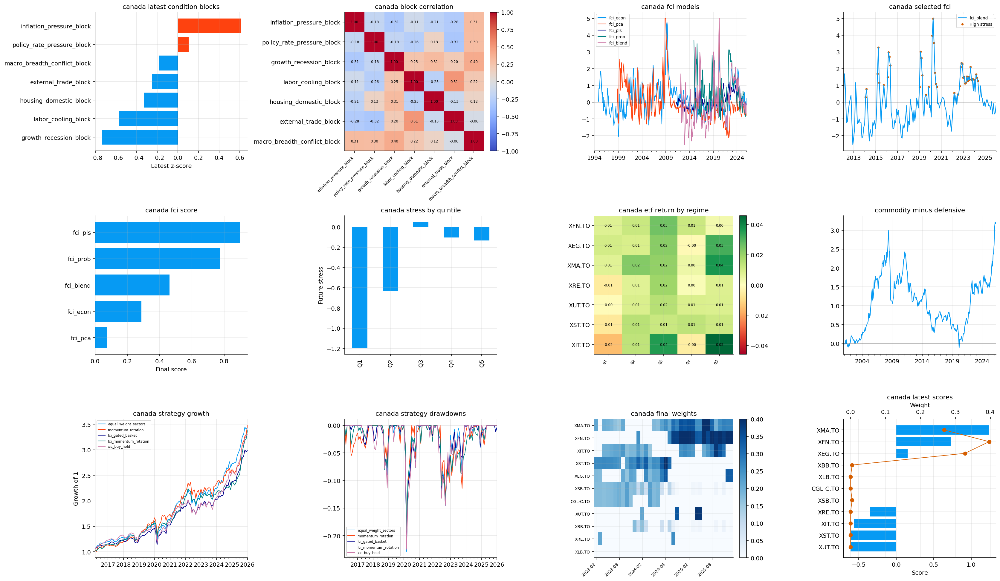